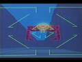
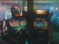

Homepage - mashinfo.github.io/mameinfo
E-Mail - mameinfo@ewetel.net
Visit ARCADE AT THE MOVIES
 
0.285GIT - New games: Moon Raker and Waku Waku Jumbo (Rev A) - New Working games: 'Maque Wangchao / Chaoji Da Manguan 2 - Jiaqiang Ban (China, V100C)' - New Non-Working games: Gamebox, Modern Cart and Relief Pitcher (System 1, prototype) - New clones: Cherry Bonus III (ver.2.20), Cherry Bonus III (ver.3.0), Dingo (Nuova Videotron bootleg), Devil Fish (Nuova Videotron bootleg), Dirt Dash (World, DT2 Ver.C), Empire City: 1931 (US, bootleg) and Jungle King (Nuova Videotron bootleg) - New AGEMAME games: 21 Club (Barcrest) (German) (MPU4) (GTW 2.7), Crown Jewels Deluxe (Barcrest) (German) (MPU4) (CJG 0.4, set 2), Cup Final (Nova) (MPU4) (set 3), Pink Panther (German) (Maygay) (M1A/B) (set 2) and Roadrunner - New drivers: gamebox.cpp, scsi_cdrom_apple_ext, subsino_kr_h8.cpp and floppy_twiggy - CPU . Analog Devices ADSP-2100: Correct some tabulaton that had rotted (adsp2100\adsp2100.cpp) . Dynamic Re-Compiling . drccache: Defer allocating to start, allow forcing W^X mode. Added helpers for allocating structures/objects in the cache. Supply desired alignment when allocating cache memory (not fully implemented). Log some statistics on destruction (cpu\drccache.cpp). Added -[no]drc_rwx option to allow forcing W^X mode when writable executable pages are permitted (emu\emuopts.cpp). . PowerPC DRC: Allow DRC cache size to be set externally at configuration time, so systems can override the default (cpu\powerpc/ppc.h and powerpc\ppccom.cpp). . 3DO DSPP, hyperstone E1-xx + Hynix GMS30C2xxx: Don't allocate DRC resources if recompiler is disabled (dspp\dspp.cpp and e132xs\e132xs.cpp). Simplify arithmetic right shift calculations (e132xs\e132xsop.hxx). . ARM7: Removed ARM7 from the list of DRC CPUs since its incomplete recompiler functionality was removed (scripts\src\cpu.lua) . Motorola MC68008: Fixed crash when trying to set PC from debugger (m68000\m68000.cpp) . Texas Instruments TMS32032: Got rid of some superfluous parentheses (tms32031\32031ops.hxx) . Zilog Z80: Fixed IRQ state if comes from daisy chain (z80\z80.cpp) - SOUND . MM5837 Digital Noise Source: Configuration interface simplifications (sound\mm5837.h) . TMS5110: Removed romclk_hack (sound\tms5110.cpp) - DEVICE . Imgtool: Retired the get_chain method. This is no longer implemented by any supported filesystem, and no command made any use of the information it provided (floptool's flopblocks command is functionally comparable) (imgtool\imgtool.cpp). . Namco C123 (4x + 2x Tilemaps): Zerofill control regs (namco\namco_c123tmap.cpp) . Sanyo LC7535: Use device_sound_interface. Removed custom volume callback. Added option to use a logarithmic gain scale. Use explictly sized variables (sound\lc7535.cpp). - New drivers: subsino_kr_h8.cpp - cvs.cpp: Lower TMS5100 clock (no xtal). Note: TMS5100 is around 620kHz from an R/C osc with a VR, slightly differs per PCB. - deco32.cpp . Fixed volume control for Dragon Gun and Locked 'n Loaded (ID 05422) . Updated Dragon Gun for new LC7535 interface and support switching the gun OKI output between gun speaker and main speaker. . Use common xtals for Night Slashers. Confirmed Tattoo Assassins maincpu xtal. Lower soundcpu clock for Dragon Gun, Fighter's History, Locked 'n Loaded and Night Slashers. - deco156.cpp: Implement volume control for Heavy Smash - goldstar.cpp: Cleaned up various stuff - jaguar.cpp . Rewrote EEPROM access, fixes (MESS) jaguar [cfodder] has no access to the SRAM (ID 09342). Fixed Player 2 buttons. Fixed quickload regression. Massage unaligned accesses towards Tom & Jerry. Makes (MESS) jaguar protect and protctse playable. R30 gets overwritten on irqs. Fixed shlq calculation. Former fix for (MESS) jaguar kasumi booting. Fixed random crashes in Fishin' Frenzy startup (access cojag_gun_input_r, leftovers?). Fixed mmult opcode, fixes BIOS ATARI letters, 3d renders in (MESS) superx3d and hstrike. Workaround for (MESS) battlesp/battlesg black screen (atari\jaguar.cpp). . Don't set a pending irq if line is masked. Use set_input_line for irq 0 as well. Added N flag for abs opcode and simplify calculation (cpu\jaguar\jaguar.cpp). . Stop opcode populates object code too. Correct RMW masks. Regular bitmap rewrite of 16bpp and 24bpp using pitch base. Bump number of object processor max entries to 200, fixes (MESS) jaguar raiden ranking screen and ttoonadv missing gameplay GFXs. Moved out object pointer from process functions. Implemented BCOMPEN, fixes (MESS) jaguar missil3d text and original version GFXs. Implemented pitch in scaled 8bpp bitmap and blending in scaled 16bpp. Partially fixes (MESS) jaguar mutntpng and phase0 main menus, respectively. Avoid potential crash in (MESS) raiden (atari\jagobj.ipp). . Attempt to make scanline_update safer. Mask host irqs if correlated bit in INT1 isn't enabled. PIT GPU timer are after regular clock with no internal divider, fixes (MESS) jaguar raiden BGM tempo. Disable PIT on prescaler == 0xffff. Blitter readback fix for (MESS) jaguar avsp. Upcast PIT and JPIT to u64 resolution, fixes hang regression in (MESS) jaguarcd (atari\jaguar_v.cpp). . Added JPIT1 and JPIT2 irq sources, fixes sound in (MESS) jaguar cybermor and mutntpng. Sort out JPIT irq section. JPIT setups needs either prescaler or divider set to work, fixes (MESS) jaguar pbfant sound. Allow changing serial frequency after setting SMODE. Allow playback of BIOS roaring sample. Clear DSP irq lines on JPIT and serial disabled (atari\jaguar_a.cpp). . Multiply pitch in source and destination widths. Fixed 3D renders for chekflag and others. Improved non-TOPBEN handling. Fixed (MESS) hstrike difficulty select blending and partially fixed (MESS) battlesp main menu. Preliminary GOURZ support (atari\jagblit.ipp). - mpu4bwb.cpp: Removed preprocessor line continuation backslash that's asking for trouble - raiden2.cpp: Moved systems with blending to a separate state class and reduced code duplication (seibu\raiden2.cpp). Draw sprites using priority for xsedae (no blending) (seibu\raiden2_v.cpp). Removed static member declarations that aren't actually defined (seibu\raiden2.h). - Alien3 The Gun: Added PORT_MINMAX to the Y direction to avoid the value going out of range. Fixes aiming reticle rolls over from top of screen to bottom in alien3, Service Mode shows value for UP goes beyond max FF value back to 00 (ID 08679). - Choplifter: Note that IC7, IC13 and IC19 (315-5025) are not PLDs, but are a custom graphics shifter. - Donkey Kong Junior: Redumped GFX ROMS for clone Donkey King Jr. (Nuova Videotron bootleg). Note: Missing gfx now appear on screen (i.e. title screen). Measured clocks for clone Donkey King Jr. (Nuova Videotron bootleg). - Knuckle Joe: Added screen raw params from video measurements. Normalize red color channel for 2nd half of palette. Added note about overclocked Z80. - Maque Wangchao / Chaoji Da Manguan 2: Improvements. Hooked up protection device emulation and Oki ROM banking. Redumped Oki ROM. Promoted game to working. - Qianxi Jielong: Added BG layer - Rolling Crash / Moon Base: Use rom PCB locations from moonbase and removed MB14241 Shifter IC - The Simpsons: Changed screen visible width to 320 again after confirming it on a 2nd PCB - Traverse USA / Zippy Race: Normalize red color channel - unknown VRender0+ bowling game: Minor notes update - Fixed rom names in vicdual.cpp - Description changes of Crown Jewels Deluxe (Barcrest) (German) (MPU4) (CJG 0.4, set 1), Donkey King Jr. (Nuova Videotron bootleg), 'The Fallen Angels (World) / Daraku Tenshi: The Fallen Angels (Japan)', Packy no Treasure Slot (Japan, main ver. 1.3, video ver. 1.1), Pink Panther (German) (Maygay) (M1A/B) (set 1), Sol Divide: Sword Of Darkness, Sol Divide: Sword Of Darkness (Korea), Sonic Blast Man no Janken Battle (Japan, main ver. 1.1, video ver. 1.0) and Video Pool (Nuova Videotron bootleg of Video Hustler) - Renamed (dirtdash) to (dirtdashb), (dkongjrv) to (dkingjrv) and (packysts) to (packyts) - Dipswitch fixes in goldstar.cpp - MAME . VIDEO RENDERING SYSTEM . Added an off-screen reload helper plugin for people playing lightgun games with other types of controls (plugins\offscreenreload\*). . UI/OSD: Added -[no]drc_rwx option to allow forcing W^X mode when writable executable pages are permitted (emu\emuopts.cpp) . PLUGINS . Fixed Cancel not working in input selection menus (plugins\commonui\init.lua) . Added support for non-wrapping analog inputs (plugins\inputmacro\*). Changed the "previous menu" item text to make what it does more obvious (ui\pluginopt.cpp). . Removed core off-screen reload hack now that the same thing can be achieved more flexibly with plugins (emu\inputdev.cpp and emu\emuopts.cpp). . Better support for external MMUs (emu\dimemory.cpp, emu\machine.cpp, debug\debugbuf.cpp, debug\debugcmd.cpp, debug\debugcon.cpp, debug\debugcpu.cpp, debug\dvdisasm.cpp, debug\dvmemory.cpp, debugger\osx\disassemblyview.mm, debugger\osx\disassemblyviewer.mm, debugger\osx\memoryview.mm, debugger\osx\memoryviewer.mm, debugger\qt\memorywindow.cpp, debugger\win\memoryviewinfo.cpp amd m68000\m68000.cpp). . Merged wayward speakers (midw8080\mw8080bw_a.cpp, sega\model1.cpp, nscsi\cd.cpp) - Compiling . Allow "0" to be specified as a parameter for numeric options (tools\unidasm.cpp) . You're supposed to specify MEM_RESERVE when requesting additional address space. This has been buggy since the very first VCS revision of the MAME 0.121 source, but Windows tolerates it (lib\osdlib_win32.cpp). . Cleaned up devices build scripts a bit: Lua considers anything other than null or false to be "truthy". The tests against "null" were comparing to a non-existent global called "null" that evaluated to nil. Got bus.lua back in alphabetical order and got at least most of the trigger variables aligned with paths. At least don't put random stuff in the middle of the Acorn devices in machine.lua. 0.284 - New games: Jammin' (prototype) - New Non-Working games: The Aladdin (V1.2U), Animal Kaiser - The King Of Animals (ANA1004-NA-B), Animal Kaiser - The King of Animals (Evo 1, ANA2004-NA-A), Animal Kaiser - The King of Animals (Evo 2, ANA2004-NA-A), Animal Kaiser - The King of Animals (Evo 8, ANA2004-NA-A), Animal Kaiser - The King of Animals (unknown Evo, ANA2004-NA-A), Da Huangguan, Dongshizhang (China, Ver. 212), Golden Egg (version U1.8), Golden Treasure Island (Ver. Alpha 100), Hard Puncher Hajime no Ippo - The Fighting! (VER.2.02J), Mahjong Tokkyu Kaiten-ban Part 2 (Japan), Pac-Man Battle Royale (US, PBR1022-NA-A), Pac-Man's Arcade Party (PMAAM12-NA-A), The Pirates of Dark Water (SNES bootleg), Qianxi Jielong, Umi Monogatari Lucky Marine Theater (ULS1001-ST-A), 'unknown 8085-based crane game', 'unknown Amstar cards game (set 1)', 'unknown Hom Inn cards game' and Waku Waku Thomas (Japan) - New clones: The Aladdin (V1.1A), AS-1 Controller (set 2), AS-1 Controller (set 3), AS-1 Controller (set 4), Backgammon (Wand), Cherry Master '99 (QL-1 V9B.00, Cleco, Hand Count?), Cherry Master '99 (QL-1 V9B.00, USA long PCB), Cherry Master '99 (QQ-1 V9B.00, Cleco), Crazy Monkey (bootleg, 050120, payout percentage modified), Cyber Police ESWAT (bootleg with MC68705), Double Dragon (bootleg with 3xM6809, set 3), Double Dragon (bootleg with 3xM6809, set 4), El Dorado (V1.1U), El Dorado (V1.5U, Dyna/Grayhound), 39x Flaming 7's (50 bonus, GSxx: ..., Nevada Numbers), Fruit Bonus 2000 / New Cherry 2000 (Version 3.7), Gauntlet Legends (version 1.4), Head On 2 (Sega Slimline), Hyperdrive (ver 1.31, Oct 21 1998), IPM Invader (M11), Janyou Part I (Double Bet), Mingxing San Que Yi (Taiwan, V102TW), Ms. Pac-Man (bootleg, set 6), New Texas '99 (QL-1 V9B.00, Kolom V1), Omega Fighter (set 2), Pac-Man Battle Royale (Japan, PBR101-1-NA-A), Pit Boss Superstar (9221-10-00), Progear (Europe 010117), Saurian Front (proto v5.0 8/07/90), Sky Robo (bootleg), Super Fruit Bonus (Version 2.3), Tarzan (V201FA), Texas '99 (QL-1 V9B.00), Texas '99 (QL-1 V9B.00, Cleco, Hand Count?), Texas '99 (QL-1 V9B.00, USA long PCB), Texas '99 (QQ-1 V9B.00, bootleg), Texas '99 (QQ-1 V9B.00, Cleco), Tonton (Japan, ver. 1.00), Treasure Ocean (v1.2), Triple Draw Poker (Video Village), Trivia ? Whiz Edition 4 (6221-10, U5-0A, alt Strange But True trivia), 'unknown Amstar cards game (set 2)', World Invader and Xevious (Atari, set 4) - Removed games: War: Final Assault (EPROM 1.91 Apr 13 1999, GUTS 1.3 Apr 7 1999, GAME Apr 7 1999) - New drivers: funtech_h8.cpp, hominn_980924.cpp, hominn_mcs51.cpp, namcos14x.cpp and unkcrane8085.cpp - New devices: scsi_pc98_hd and sei25x_rise1x - New mame.ini options: artwork_font (CORE ARTWORK OPTIONS) - New Clrmame: https://mamedev.emulab.it/clrmamepro/#downloads - Bob Zed (What's new): https://youtu.be/3kJ-VGUSwJs - CPU . ADChips SE3208: Cleaned up code in VRender0-related drivers and devices: Suppress side effects for debugger reads. Use snake_case names, use abbreviated integer types and use lowercase hexadecimal digits. Improved logging. Avoid reserved name for type (cpu\se3208\se3208.cpp and se3208dis.cpp). . Intel 8086: Effective address calculatation time varies greatly from one (GitHub #14632). CPU variant to the next. On the 286, it's effectively free, unless two additions are required, in which case it takes 1 cycle. On the 8088/8086 on the other hand, it can take up to 12 cycles. There needs to be a different set of timings for each CPU variant. I tested on a 286 system (att6300p) with https://thandor.net/benchmark/36 and the score went from 29 to 46 - almost a 60% speedup! Also added a few minor cycle count fixes (i86\i86.cpp). . Intel 80960KA/KB: Clear burst stall on reset (fixes Sega Model 2 games hanging on soft reset) (i960\i960.cpp) . NEC V53: Fixed SCU clock selection on V53 and emulated the baud rate generator. Clear m_brc_enable in constructor (nec\v5x.cpp) - SOUND . FM core: Extend at_end FN by 1. Note: (MESS) pc98:metlfrce wants this to detect the speakboard, cfr. note in header card (3rdparty\ymfm\src\ymfm_adpcm.h). ADPCM updates from https://github.com/aaronsgiles/ymfm/pull/40. Fixed endianness and alignment issues when writing WAV files (ymfm\src\ymfm.h). . MagicEyes VRender0 Sound Engine: Update per-channel cache when texture memory pointer is changed. Simplify casting (sound\vrender0.cpp) . Sound Interface: Sync the speaker streams, fixes the crashing after ~24hours at 48Khz when there is a resampler just before the speaker. Fixed fatalerror when trying to change the sample rate while in stream_update (emu\sound.cpp). Note: Kills g13jnr. Added error for problematic initial sample rates (emu\sound.cpp). . Taito Ensoniq Sound System: Re-enable esqpump aux outputs (taito\taito_en.cpp) - DEVICE . Floppy . Added support for machines that have non-standard TS (two-sided) line hookups (machine\upd765.cpp) . Command interface improvements: Eliminated voluminous info dump on formats and filesystems when invoked with no arguments. Show only usage info for relevant command when parameters are invalid. Added help command to print information about any or all commands, formats and filesystems. Added flopblocks and hdblocks commands to enumerate blocks used by every file or directory on the specified volume (tools\floptool.cpp). . Internal API change: Raw pointer accessors (data, rodata) are no longer provided for fsblk_t::block_t. Other accessors used to be based on these methods, but now require their own internal overrides. This entails more copying of data in many cases, but will allow more flexible subclassing opportunities in the future. To compensate for the removal of raw pointer accessors, added methods to fsblk_t::block_t for checking whether a portion of a block is equal to a memory range or a string (eqmem, eqstr). The resulting changed behavior in formats/fs_oric_jasmin.cpp actually fixes a bug in the directory search routine (formats\fsblk.cpp). . Hudson HuC6270 VDC: Added AR readback (video\huc6270.h) . Imgtool: Fixed error of assigning nullptr to variable of type std::string (imgtool\imgtool.cpp) . MagicEyes VRender0 Video Engine: Use templates and function pointer arrays for draw functions. Use device_memory_interface for external memory. Minor fixes in single color fill function. Use pal5bit/pal6bit functions for color field extraction (video\vrender0.cpp). . MOS 6551 ACIA: Do not disable the transmitter when a command deasserts RTS. RTS high disables transmitter, but not in the middle of a character (machine\mos6551.cpp). . Namco Custom . Namco C45 Road + Namco C169 (ROZ): Allow priority/mask value writes in draw routines (namco\namco_c45road.cpp + namco\namco_c169roz.cpp) . Namco 186/187 or C355/187 (sprites): Improved flexibility: Use callback for mixing and added transparent pen configuration. Moved alternate precision flag to configuration. Fixed potential crashes. Reduced duplication and unnecessary code (shared\namco_c355spr.cpp). . Paradise Systems PVGA1A i/f: Scaffold extended space access (video\pc_vga_paradise.cpp) . RAM: Allocate memory with suitable alignment for any type (machine\ram.cpp) . SCSI Bus: Added a BSY line callback suitable for drive LEDs to the bus itself (machine\nscsi_bus.cpp). Now all NSCSI users can have a drive activity LED. . Seibu Kaihatsu SEI251/SEI252/RISE10/RISE11 Sprite generator: Merged SEI25X and RISE1X sprite hardware emulation into a device. Added configuration option for allocating raw sprite graphics bitmap. Separated plotting logic from sprite loop (seibu\sei25x_rise1x_spr.cpp; seibu\feversoc.cpp, r2dx_v33.cpp, raiden2.cpp, seibucats.cpp and seibuspi.cpp) . SoundBlaster 16: Fixed sb16_lle produces ugly beeps in (MESS) ct486 Wolfenstein 3D (ID 09316). Converted irq triggers to input_merger. Moved OPL3 ranges in host_io map. Round up cnt reads to actual raw writes. Ack irq16 too when reading 0x22e from host side. Subscribe to ISA remap. Mode bit 1 is for silence, fixes (MESS) fwmigolf card detection (isa\sb16.cpp). Hookup legacy Microphone level r/w (sound\ct1745.cpp). . Western Digital WD33C9x SCSI Controller: Fixed negate ACK should trigger an irq (machine\wd33c9x.cpp, GitHub #14532) . Zilog Z80: Skipped memory write in stackless NMI mode (z80\z80n, z80\z80.lst) . Zilog Z80 DMA Controller: Relaxed fatal error which were used for unknown commands catching (machine\z80dma.cpp) - aleck64.cpp: Set up more stuff at construction (nintendo\n64_v.cpp). Got rid of unused private field (nintendo\rdpblend.cpp/h). - armedf.cpp . Terra Force: Correct offset for marking dirty tile. Fixes the left and right sides of the image are cut off in the title demo scene (ID 09326). Increased spriteram size. Fixes sprites may disappear during attract mode (ID 09327). Correction to blitter_txram_w dirty mask for clone Terra Force (Japan, bootleg with additional Z80). . Correct FM sound chip type (armedf and terraf) (ID 09328) (ID 09329) - balsente.cpp: Allow self-oscillation when no waveforms are enabled (sound\cem3394.cpp) - brkthru.cpp: Increased screen width and rearranged comment block. Put bgscroll write in its own function and correct clone Break Thru (Tecfri license) coinage dipswitch. Update notes. Added 'Flip Screen' dipswitch. Small cleanup. Correct continue/servicemode dsw for brkthru. Correct interrupt logic. - cdi.cpp: Fixed Letterboxing in (MESS) CD-i 'Mystic Midway - Rest in Pieces' (GitHub #14694) (philips\mcd212.cpp) (philips\mcd212.cpp). - chihiro.cpp: Added dsp563xx unit tests (virtual driver utdsp563xx). Correct a couple of dsp563xx instructions and added the opcode to the display. Fixed regression in determining operating mode (cpu\dsp563xx\dsp563xx.cpp). - cps1.cpp: Dumped PLD for clones area88r and cawingjr - crospuzl.cpp, crystal.cpp, ddz.cpp, menghong.cpp, psattack.cpp, trivrus.cpp and v0bowl.cpp: Cleaned up code in VRender0-related drivers and devices: Suppress side effects for debugger reads. Use snake_case names, use abbreviated integer types and use lowercase hexadecimal digits. Improved logging. - deco32.cpp: Fixed save state support, added context to logging and cleaned up code. - firebeat.cpp: Added the SWP30 to the list of drc-using CPUs (scripts\src\cpu.lua) - gaiden.cpp: Make tile scrolling consistent with hardware. Added missing x offset registers for the tile layers. Use set_scrolldx/y to set the x/y offsets for the tilemaps. Adjust x/y offset logic so it matches up with what happens on hardware. - gal3.cpp, namcofl.cpp, namconb1.cpp, namcos2.cpp, namcos21_c67.cpp and namcos21_de.cpp: Use abbreviated integer types consistently. Use single-pass C355 draw routine. - galaxi.cpp: Templates, hopper device instead of custom implementation. - gamtor.cpp: Improved hardware documentation. Fixed format and small typos. Added DIP switches. - goldstar.cpp . Cleanup cmast97 and jpknight dipswitches . Consistent naming for more DIP switch settings. Also order payout rate settings from least to most generous and key-in is not coins. . Removed leftover, cleaning up Mega Lines and Skill Chance screen update. . Added 'Double Up Game' and 'Check Account (Allow Books)' dipswitches to cherry96, cherry96a, cherry98 and cherry98a. Also added the game version to cherry96 and cherry96a game descriptions. . Clone Cherry Bonus III (Ivanhoe V46-0799) improvements: Workaround to skip the 240 games suicide limit. Added dsw settings. . Fixed A-Plan foreground graphics and reels graphics bitplanes order . Cherry Master '99 (QL-1 V9B.00) improvements: Created new dedicated machine config, memory map and basic raw inputs. First attempt to implement the weird and complex dynamic ROM banking, that now allows the game to boot and play the attract. Fixed bug in the Cherry Master '99 bank selector. Improved inputs and added buttons-lamps control panel to cmast99 and cmast99b. Fixed one bad bit of cmast99 and cmast99b reels graphics. Added extended PLD dumps to cmast99 + clones and texas99 sets. Added technical notes about the insane bankswitching for this hardware. Sharing the same Cherry Master 99 regular PLDs with the cmast99 and texas99 sets. Cherry Master '99 (QQ-1 V9B.00, bootleg) improvements: Applied same machine and scheme than the original Dyna parent. . Extended the Cherry Master 99 extra bankswitching PLDs to top7, top7a and war3cb sets. All running in the same hardware base. Removed the bad dump flag to the top7 and top7a sets bipolar PROMs. Confirmed that they are identical to the Cherry Master 99 ones. Sharing the same Cherry Master 99 regular PLDs with the top7 sets and war3cb. . Reorganized Dyna El Dorado sets by hardware (Dyna D9101, D9105 and D9106C PCB) . Added nfb96 conditional DIP switches for payout rate/difficulty display (DSW1). Implemented conditional nfb96 DIP switches behavior for DSW1 based on DSW4:2. When "Show In Confirm Screen" (DSW4:2) is set to Percentage, DSW1 now displays payout rate values (55%-90%). When set to Level of Difficulty, DSW1 instead displays levels (1-8). Both sets of options use the same bitmask (0x07) and are filtered through PORT_CONDITION to match the hardware behavior. . Fixed all remaining Wild Cat 3 animations . Added handcrafted Dallas (ds2401_50.bin) iButton data to fl7_1000, fl7_2000, fl7_2k16, fl7_50, fl7_50_gs01, fl7_50_gs02, fl7_50_gs03, fl7_50_gs04, fl7_50_gs05, fl7_50_gs06, fl7_50_gs07, fl7_50_gs08, fl7_500, fl7_tw and fl7_twa. Removed the hack toward the accurate emulation. Renamed the device ROMs to DS1994L-F5. Added technical notes about DS1994 against DS2401 for Flaming 7's custom hardware. Updated Cyberdyne Systems Flaming 7's technical notes about emulation status and Dallas ibutton serial number. - hng64.cpp: Added lamp and ffb wheel outputs. Hooked up the second address space selected by /ROM pin 86 (sound\l7a1045_l6028_dsp_a.cpp). Adapted to use the ROM address space and turned off logging. - igs017.cpp: Support control panel for starzan, tarzan103m and clones. Marked tarzanc and starzan + clones not working due to protection issues (ID 09197). - model2.cpp . Tidy some stuff (sega\model2_v.cpp, sega\model2rd.ipp). Replaced a macro with a constexpr function (sega\model2rd.ipp). . Various improvements: Moved geo_parse() and frame number update to start of vertical blanking (fixes high score scrolling in segawski, 2D palette in dynamcopc, and 3D graphics in bel not displaying after first booting up). Use exponent to adjust the Z-value scale for Z-sorting. Merged model2_3d_process_quad() and model2_3d_process_triangle() into a single template function, since most of the code was identical. Original Model 2 does have FIFO control; it uses the same 315-5673 buffer controller as Model 2A and 2C. Replaced scanline timer with vertical blanking callback (sega\model2.cpp, sega\model2_v.cpp). Fixes shot enemies and burning cars skeletons flickering colour is a strange pink/magenta like in vcop2 (ID 09287). . Intel 80960KA/KB: Clear burst stall on reset (fixes Sega Model 2 games hanging on soft reset) (i960\i960.cpp). . Hooked some more lamp outputs based on SailorSat's work. . Added default backup RAM and EEPROM content for Hanguk Pro Yagu 98. Also correct texture ROM loading. The game now boot and runs. . When writing to IRQ mask register, wait two cycles before checking for sound IRQ. Fixes music missing in beginner stage of Virtua Cop 2 (sega\model2.cpp) (ID 09313). . Use object finder and suppress side effects for GTX protection handler - namcos2.cpp: Use abbreviated integer types consistently. Use single-pass C355 draw routine. Split driver state classes for different hardware configurations. Optimized drawing slightly. Improved ROM region names, updated notes, and cleaned up code (namco\namcos2.cpp). Use priority mechanism rather than multiple drawing passes (namco\namcos2_roz.cpp, namco\namcos2_sprite.cpp). Added priority value and mask parameters to drawing functions, and cleaned up code (namco\namcos2_roz.cpp). Added priority value and mixing callbacks. Draw sprites in a single pass using priority control. Cleaned up code and updated notes (namco\namcos2_sprite.cpp) [cam900]. - namcos10.cpp: Move rate changes outside of stream update (sound\lc82310.cpp). Fixed fatalerror when trying to change the sample rate while in stream_update. Note: Kills g13jnr (ID 09292). Source style cleanup (sound\lc82310.cpp). - namcos12.cpp: Ensure m_regs is initialized and saved (machine\icd2061a.cpp) - namcos22.cpp: Hook up System22 outputs, based on SailorSat's work. - nwk-tr.cpp and zr107.cpp: Wheel FFB outputs hooked for racingj, racingj2, thrilld and zr107.cpp. - seattle.cpp: Standardize rom loading structs. Removed 'BAD_DUMP' flag for seattle.snd. Sound subsystem test in mame and pcb matches. This alone convinces me to remove that flag. - sfbonus.cpp: Updated driver. Verify initial hardware-board compatibility for several game sets. Performed three passes of validation to confirm which game sets successfully boot on specific PCB types. This update documents the initial compatibility findings and lays the groundwork for more detailed hardware-mapping in future revisions. - starwars.cpp: Difficulty settings in Star Wars now match the arcade operator's manual (starting shields: 6, difficulty: Hard). Difficulty and Demo Sounds in 'The Empire Strikes Back' can't be inherited from starwars as they are scrambled/inverted relative to starwars. Difficulty default ("Hard") taken from ESB Conversion Kit manual. - vegas.cpp: Shuffle set versioning around. Changed warfa and nbanfl to use the different bootroms as BIOS options. Removed patch for nbanfl. Removed warfac set (only bootrom different vs. parent set). - Arch Rivals: Added a PLD dump - Backgammon: Use English DIP switch setting labels - Balance Try: Hookup input, sound and NVRAM. - Battle Garegga: Added licensee names for each region to clone Battle Garegga (Korea / Greece) (Wed Feb 7 1996) - Blaze On: Brute-forced PLDs - Cameltry: Hook up sprite buffer. Fixes glitch on the stage choice screen in clone Cameltry (Japan, YM2610) (ID 02411). - CART Fury Championship Racing: Hook up outputs - Chance Thirty Two: Added hopper, NVRAM and enabled save state support. - Cool Boarders Arcade Jam: Verified ROM dump - Cow Tipping: Ignore lower 3 bits for IVR writes (machine\mc68328.cpp) - Derby Derby: Identified game (unkhorse -> drderby) (ID 09323). Update notes. - Finalizer - Super Transformation: Added screen raw params and increase visible width. Fixes the display area appears smaller than it actually is (ID 09331). Flip the 'Flip Screen' dipswitch (ID 09332). - Funky Ball: Update QA. Added observation notes. - GTI Club: GTI Club wheel outputs hooked - Hold & Draw: Dumped custom GFX ROMs. Note: These custom ROMs were dumped via an adapter built on educated guessing of the pinout, so resulting dump isn't confirmed to be 100% correct they do contain good GFX data. - Ikari III: Verified ROM labels for clone Ikari III - The Rescue (World, Rotary Joystick) - Jinpai Suoha - Show Hand: Fixed freeze on GMS logo - Karnov: Dumped MCU for clone Karnov (Japan) - Mortal Kombat: Patched out clone Mortal Kombat (Reptile Man hack) protection (midway\midyunit_m.cpp) - Omega Race: Enable cocktail mode. This enables screen flipping when the Omega Race dip switch is set to cocktail. Also updates layout file as the cocktail has a blue overlay instead of the yellow one the upright has. Disable clickable artwork (layout\omegrace.lay). - Pharaoh's Mystery: Dumped NVRAM, game now boots. - Puck Man: 'Bonus_Life' DSW fix for clones Newpuc2 (set 1) and Newpuc2 (set 2) (ID 09300) - The Real Ghostbusters: Delay NMI flipflop by 1 cycle. Fixes almost no sprites in stage 2 (ID 09333). - Super Chase - Criminal Termination: Re-enable esqpump aux outputs (taito\taito_en.cpp). Fixes missing sounds during attract mode, cutscenes and gameplay in Super Chase - Criminal Termination (ID 09315). - Time Attacker: Minor cleanups and spacing - Wally wo Sagase!: Correct ROM labels for clone Wally wo Sagase! (rev A, Japan, 3 players) (FD1094 317-0198A). Updated and correct Sega ID# information for all Wally wo Sagase! sets. - Water-Nymph: Added real DS1971 dump to clone Blue Shark (Subsino, Ver. 1.0) - X-Men: Improved interrupt logic. Fixes bad work ram test (Github #14725) (ID 08883). - Fixed rom names in meritm.cpp, ninjakd2.cpp, snk68.cpp and taito_h.cpp - Description changes of Alien Arena (with Stargate sound), AS-1 Controller (set 1), Cherry Master '99 (QL-1 V9B.00), Cherry Master '99 (QQ-1 V9B.00, bootleg), Deluxe Trivia ? Whiz Edition 5 (6221-75, U5-0, vertical), Derby Derby, Finalizer: Super Transformation (bootleg), Finalizer: Super Transformation (set 1), Finalizer: Super Transformation (set 2), IPM Invader (M10, set 1), IPM Invader (M10, set 2), Kyoukou Toppa (Japan), New Cherry '96 (ver 3.2, 1996/06/01, bootleg), New Cherry '96 (ver 3.7, 1997/01/04, bootleg), Omega Fighter (set 1), Pharaoh's Mystery (USA v3.00), Tic Tac Trivia (6221-22, U5-0, vertical), Tonton (Japan, set 1), Triple Draw Poker (Design Labs / Thomas Automatics), Trivia ? Whiz (6221-00, alt Gen trivia), Trivia ? Whiz Edition 2 (6221-05, alt Sex trivia), Trivia ? Whiz Edition 3 (6221-04, U5-0E, vertical), Trivia ? Whiz Edition 4 (6221-13, U5-0B, vertical), Trivia ? Whiz Edition 4 (6221-13, U5-0B, vertical, alt Sex trivia), War: Final Assault (GUTS 1.1 Mar 16 1999, GAME Mar 16 1999), War: Final Assault (GUTS 1.3 Apr 20 1999, GAME Apr 20 1999) and War: Final Assault (GUTS 1.3 Mar 25 1999, GAME Mar 23 1999). - Dipswitch fixes in chance32.cpp, manohman.cpp, goldstar.cpp, pacman.cpp, seta2.cpp, starwars.cpp and raizing.cpp - Renamed (big_jackpot) to (bigjkpot), (cuttherope) to (cutrope), (diamondking) to (diamondk), (diamondkinp) to (diamondko), (disc_bonus) to (dscbonus), (disc_jackpot) to (dscjkpot), (doodlejmp) to (doodljmp), (doppelpot) to (dpplpot), (doppelstart) to (dpplstrt), (elitedisc) to (elitdisc), (excellent) to (excellnt), (extrablatt) to (extrbltt), (glucksstern) to (glksstrn), (goldenchip) to (goldnchp), (grandhand) to (grandhnd), (guitarheroac) to (gtrhroac), (jokerpoker) to (jkrpoker), (jumbojumbo) to (jmbojmbo), (jumbojumbof) to (jmbojmbf), (kleopatra) to (kleoptra), (monkeyjmp) to (monkyjmp), (multimulti) to (multmult), (polarstar2) to (polstar2), (progear) to (progearu), (supermultib) to (sprmltib) and (unkhorse) to (drderby) - MAME . VIDEO RENDERING SYSTEM . Fixed PowerPC build (video\rgbutil.cpp) . Improved accuracy and performance calculating text aspect ratio (emu\rendlay.cpp). Also added another text alignment option to stretch the text to fill its bounds horizontally. The current code calculating the aspect ratio for text involves looping, calculating the width of text for a variety of decreasing aspect ratios until the text's width is less than the available bounds. However, this string width calculation performs the same loop over the text each time, finally multiplying by the candidate aspect ratio. That text width calculation thus really only needs to be done once. Further, instead of trying different aspect ratios, the ratio can simply be calculated directly by dividing the width of the bounds by the string's width. This also calculates a more accurate aspect ratio, rather than always resulting in an aspect ratio of (0.95)^n. For example, when trying to fit a 101-pixel wide text into a 100-pixel wide space, the current code would result in an aspect ratio of 0.95, making the text 96 pixels wide, leaving 4 pixels unused; the new code will instead calculate the aspect ratio as 100/101 == 0.9900990099... , making the text use the full 100 available pixels. This in turn allows us to easily calculate the ratio also if we want to not just schrink but also stretch the text to fill the available space, so we add that as another text alignment option, number 3 (three). This PR also demonstrates this in the VFX family of layouts, where on the default Full view, the text "MUSIC PRODUCTION SYNTHESIZER" ("DYNAMIC COMPONENT SYNTHESIZER" on the VFX), the logo-like text "ensoniq", and the keyboard-specific markers "VFX", "VFX-SD", "SD-1" and "3 2 V O I C E" can now be made to fill their available space horizontally as they should, making it all look that much more like the real thing. Fixed text clipping introduced by https://github.com/mamedev/mame/pull/14550. Guard against possible divide by 0 (emu\rendlay.cpp). Got rid of syntax that definitely isn't supported from layouts (emu\rendlay.cpp). . Added artfont option for changing default font of .lay files text elements. Fixed text align issues with wide width font (emu\emuopts.cpp and emu\rendlay.cpp) . Replaced use of slash/backslash text for diagonal lines with SVG (layout\*) . MEMORY SYSTEM: Allocate memory region storage with suitable alignment for any type, added length accessor to and removed machine from memory region (emu\emumem.cpp). . LUA engine: Access machine.side_effects_disabled. Refactored machine:side_effects_disabled() as a method instead of property (mame\luaengine.cpp). . UI/OSD: Added speaker channels to gameinfo panel (ui\info.cpp) . Correct .lay files with text alignment issues on Linux (layout\*.lay) . Added 'tag' attribute to Info XML '' elements. Added entry in DTD for ' ' (mame\infoxml.cpp). . Reduced some of the short name inflation. It's getting silly, some of the short names are close to the length limit, which prevents forming clone names by adding suffixes. I raised my concerns about the possibility of short name inflation when I relaxed the limit. It looks like it wasn't unfounded. - Compiling . Avoid passing -m flags for pointer size on 64-bit RISC-V Linux (makefile) . Fixed a considerable number of things that give -Wcast-align warnings in src/mame. There are still far more. . Fixed a number of endianness issues. . Use multibyte.h helpers instead of playing fast and loose with alignments (emu\save.cpp, util\png.cpp, various disk and cassette formats) . Got rid of almost all remaining uses of driver_data (mame\*) and of long-obsolete driver_data (emu\machine.h). . Tidy some stuff (mostly LlamaCase template parameters and fewer temporary strings) (sound\adc.cpp and sound\swp30.cpp) . Use raw string for pattern match (scripts\build\check_include_guards.py) 0.283 - New games: Cherry Master (ED-98, Pick-A-Party), New Cherry '98 (v4.3 1998/09/07, Gamemax bootleg, set 1) and Special 7 (Taiwanese Hardware, encrypted, set 1) - New Working games: Animal House (V1.0, set 2), Cheri Mondo '97 (V1.4I), Cherry Bonus III (Ivanhoe V46-0799), Cherry Master '97 (V1.7, set 1), Cherry Master '97 (V1.7, set 3, no girls), Chong Chong Leyuan (V100CN), El Dorado (V1.4D), Fever Chance (W-6, cross-system for W-4), Huangpai Zuqiu Plus / Chaoji Shuangxing Plus (V103CN), Jackpot Knight (V1.1), Majiang Zhengba (V103CN), Manguan Fuxing (V104T) and New Cherry '96 (1997/01/04, bootleg) - New Non-Working games: Bonus Spin Bonanza (V1.1G), Crazy Bugs II (V102US), Foxy Ruby (Ver. US.01.01.A), Creepy Reels, Mahjong Kokuryu (Japan, T040-RB-03), Mahjong Nigiri Itcho!! (Japan, T038-PB-002), Megacrane, Multi Spin (v1.0), Polar Star 2 (ver. 4.5), Texas Holdem (V015US), Treasure 2000 (Ver. 107) and Xiaochou Jianianhua (S100CN) - New clones: Arlington Horse Racing (v1.21-I), Astro Wars (set 2), Blue Shark (Subsino, Ver. 1.0), Chaoji Daheng 6th (set 2), Cherry Bonus (Dyna v1.01 20fev), Cherry Master '97 (v1.6, bootleg), Cherry Master '97 (V1.7, set 2, no girls), Cherry Master '97 (v1.8, bootleg), Cherry Master I (ver.1.01, set 13, BET stops all), Cherry Master I (ver.1.01, set 14, TAKE stops all), Daiku no Gensan (Japan, M84 hardware, set 2), Flaming 7's (Cyberdyne Systems 7V5.00 (CB1000), 1000 bonus), Flaming 7's (Taiwanese Hardware, v6.5), Hot Mind (adjustable prize, set 2), Joker Master 2000 Special Edition (V1C), Koi Koi, M.I.A. - Missing in Action (Data East, 12/22/88, US, prototype?), Mahjong Tensinhai (Japan, set 1), Mahjong Vegas (Japan, set 2), Moon Lander (bootleg of Lunar Rescue, set 2), Moto Frenzy (Field Test Version, Jul 22, 1992), New Cherry '96 (1996/06/01, bootleg), New Cherry '98 (v4.3 1998/09/07, Gamemax bootleg, set 2), Queen Bee (USA, Ver. 107), Queen Bee (Ver. 117), Queen Bee (Ver. 123A), Silent Scope EX (ver EAC 1.20), Skill Chance (W-7, set 3, 62-98 main), Special 7 (Taiwanese Hardware, encrypted, set 2), Special 7 (Taiwanese Hardware, encrypted, set 3), Super Card Y2000K (Version 0.26), Super Cherry Master (v1.1), Triple Jack (V0.7), Triple Jack (V1.1) and U.S. Navy (Japan Resale Ver. 901130) - New drivers: megacrane.cpp - New devices: dsp56362, dsp5636x_shi, generic_spi_flash, hi08 and scsi_dtc510 - New Clrmame: https://mamedev.emulab.it/clrmamepro/#downloads - Bob Zed (What's new): https://youtu.be/WvsfFixLCsY - CPU . Dynamic Re-Compiling . drcbex64: Added LZCNT implementation using x86 LZCNT instruction and optimised the BSR-based implementation (cpu\drcbex64.cpp). . UML: Added UML bit field extract instructions (cpu\uml.cpp) . Freescale MCF5206E: Added basic state viewer for Coldfire. Make MCF5206E CPU accept external interrupts, fixes CPU space (misc\gamtor.cpp cares). Provide MBAR relocation and GPIO reads, fixes Funcube 2/3/4/5 battery regression. Disallow do not use commands for monomach to send 0xaa thru the transmitter. Fixed MBUS and DMA irq routing (m68000\mcf5206e.cpp). . Hitachi SH-2 (SH7604): Fixed BCR1/BCR2 and VCRDIV accessing (sh\sh7604.cpp) . hyperstone E1: Use bit field extract instructions (e132xs\e132xsdrc_ops.hxx) . Intel 8031/8051/80C51/8751: Removed spurious port read messages (mcs51\i8051.cpp). Added read/write slave address registers to 80c51 (mcs51\i80c51.cpp) . Intel 80186: Added latency when writiing DMA registers before the next DMA starts. Fixes (MESS) MPC60 crashing and the other drivers using a '186 all behave identically to 0.280 (i86\i186.cpp). . Intel 8257 DMA Controller: Make the driver handle verify cycles since the DMAC only does an address strobe (machine\i8257.cpp) . Intel I386: Set CPl after all memory reads are done in i386_task_switch (i386\i386segs.hxx) . NEC V53: Hook up V53 timer 1 routing to the SCU and made more SCU-related pins accessible to V53 users (nec\v5x.cpp) . Texas Instruments TMS320C3x: ABSF opcode was mistakenly using ~man instead of -man, causing problems for MK4 which checks whether |A|+|B| == |A + B|. Fixes walking both players toward each other would result in no collision (tms32031\32031ops.hxx). - SOUND . Roland MPU-401: Subscribe to remap and hookup irq (isa\mpu401.cpp) . Sega 315-5313 Megadrive VDP: Fixed graphics corruption during startup (video\315_5313.cpp) (ID 09296) . SoundBlaster 16: Silence spammy ports (isa\sb16.cpp) . Taito Ensoniq Sound System: Removed feature::SOUND from imperfect_features() (es5510\es5510.h, sound\esqpump.h) - DEVICE . Floppy . Documented all of the upd72069 auxiliary commands. Added Control Port C4 and C6 outputs for TC8566AF. Allow invalid auxcommand sent by (MESS) S3000, which works on hardware (machine\upd765.cpp). . Added support for bad address field crc in basic fm and mfm images (formats\flopimg.cpp) . Gaelco DS5002FP: Cleaned up (gaelco\gaelco_ds5002fp.cpp) . MB89371 Dual Serial UART: Rewrite MB89371 as a fully functional device (machine\mb89371.cpp) . MC68681 DUART: Added received data to FIFO in loopback mode (machine\mc68681.cpp) . PC hardware: Fixed up a few things for later PC models. The emulation of these systems still isn't very good in general (machine\genpc.cpp) . RS-232 Null Modem: Improved text transmission options: Added configuration switch to translate CR/LF characters from the bitbanger input prior to transmission. Multiple translation modes are provided. Added configuration switch to delay further transmission for a number of milliseconds after each CR is sent (rs232\null_modem.cpp). . Ticket Dispenser: Added a sensor test input for convenience. Also call the line status callback for ticket dispensers as well as hoppers and cleaned up the code a little (machine\ticket.cpp). - balsente.cpp: Improved CEM3394 and adapted sente6vb to the changes. Added and improved CEM3394 functionality relevant to the (MESS) 'sixtrak' while working on audio for that. Sending as a separate PR to keep the scope manageable, given there are also changes to 'sente6vb'. Incidental improvements to 'sente6vb': "unlocked" some sounds. An obvious one is the post-tuning chirp for each voice during boot. Centered audio around 0. CEM3394 changes: Made VCO output range [-1, 1], instead of [0, 1]. Added pulse-width dependent DC level of pulse waveform, as described in the datasheet. Waveform selection logic now works for voltages outside the bounds provided in the datasheet. Both the (MESS) sixtrak and sente6vb will some times use voltages outside those ranges. Added AC coupling between VCF output and VCA input. Forcing parameter computation in device_start(). Added ability to stream voltage inputs. The (MESS) sixtrak needs that for the VCA gain and VCF frequency. New configuration interface: New configure() method computes VCO and VCF zero frequencies based on the attached passive components. Exposed method for enabling pulse-width limiting for drivers that need it. Now disabled by default. Fixed compilation for FILTER_TYPE_ESQ1. sente6vb changes: Using new CEM3394 configuration interface. Verified that it produces almost the same VCO and VCF zero frequencies. Reduced CEM3394->speaker gain to compensate for increased loudness of CEM3394. Old range: [0, 1]. New range: [-1, 1]. Added AC coupling to noise output. Also changed the noise->CEM3394 gain from 0.5 to 1.0, so that the relative loudness remains the same. Old range: [0, 1] x 0.5 = [0, 0.5]. New range: [-0.5, 0.5] x 1. Fixed "FREQENCY" typo and updated comments (sound\cem3394.cpp). - bfm_ad5sw.cpp and bfm_sc5sw.cpp: Provide MBAR relocation and GPIO reads to MCF5206E CPU, fixes all games crash at start (ID 09270). - cdi.cpp: Fixed XA audio peaking by decoding in 32-bit and clipping to 16 later (philips\cdicdic.cpp). Simplified mouse position-update logic (philips\cdislavehle.cpp). Cleaned up (philips\cdicdic.cpp). - chihiro.cpp: Added DSP56362 to the audio processing unit in shared\xbox_pci.cpp as the general purpose DSP - cps1.cpp: Use three buttons per player for Final Fight (ID 09294). Note: The third button connection is always wired on the CPS-1 mainboard and does work in the game, even if it's an undocumented easter egg. In many cases, the board sets were installed in generic JAMMA cabinets with standard stick plus three buttons control panels, allowing players to use the third button. Final Fight button 3 is not officially documented and does not exist on the control panel, probably a leftover. Pressing it will allow you to escape from grabs and choke holds instantly. To access the hidden pattern test modes, turn the "Service Mode" dip to ON and hold down "P1 Button 1" ('Ctrl') or "P1 Button 2" ('Alt') during the bootup test. Button 1 will load the Scroll (Background) test and Button 2 will load an Obj (Sprite) viewer. - cps3.cpp: Provide an hack free status read (machine\wd33c9x.cpp) - goldstar.cpp . Cherry Master '97 improvements: Decoded and bitswapped the bipolar PROMs creating a RGB555 palette. Fixed title and foreground graphics colors. Video register from port to get the proper graphics modes. Adjusted and placed the reels properly. Added hopper support, mechanical counters and lamps. Fixed the reels colors and the screen update to use the vidreg for modes. More work on memory map, ports, hooked video registers, worked video hardware, reels tile info, screen update and palette/color index for different elements. Added double-up girls support with scroll, new inputs from the scratch and buttons-lamps control panel layout. Added Cherry Master '97 'Double Up Game', 'Double Up Type', 'Double Up Girls' factory forced DIP switches. Splitted inputs for Cherry Master '97 sets 2 & 3. Fixed DIP switches polarity and defaults for cmast97, cmast97a and cmast97b. Splitted inputs for Cheri Mondo '97. Added 'Reels Speed' DIP switch to cmast97, cmast97a and cmast97b. Fixed the Cherry Master '97 reels background colors. Added new register written by port 03h to properly assign the reels background colors by bonus. Simplified the vidreg handling. Adding cmast97 correct settings. Fixed some lack of def strings in cmast97 DIP switches. Fixed the cmast97 double up graphics bug when the girls are disabled through DIP switches. Promoted Cherry Master '97 (V1.7, set 1) and clones Cherry Master '97 (V1.7, set 3, no girls) and Cheri Mondo '97 (V1.4I) to working. . Cherry Master 97 (bootlegs running in different hardware) huge improvements: New machine config, machine start, bankswitching, memory map, port map, video registers, screen update, graphics decode, inputs, ROM load fix, lamps and button-lamps control panel. Added Double Up Type DIP switch (3 / 5 cards) and added the missing layout. Promoted Cherry Master '97 (v1.6, bootleg) and Cherry Master '97 (v1.8, bootleg) to working. . Jackpot Knight improvements: Fixed title and foreground colors and reels colors. Improved reels placement. More work on ports map, hooked video registers, worked video hardware, new machine config, proper screen update and proper graphics decode. Improved inputs. Added a new port to handle the Jackpot Knight reels background colors. Added Reels Speed DIP switch. Added 'Reels Speed' DIP switch. Switched DIP switches to Skill/Stops mode for default. Added buttons-lamps control panel. Promoted Jackpot Knight (V1.1) to working. . New Fruit Bonus '96 Special Edition: Removed all loaned bipolar PROMs from clones nfb96se, nfb96sea, nfb96seb, nfb96sec, carb2002 and carb2003 and decoded the proper device data for palette. Fixed the rom load of clones nfb96se, nfb96sea, nfb96seb, nfb96sec, carb2002 and carb2003 taking care of the proper graphics bitplanes. Removed the imperfect color flag of the above games. Marked clone carb2003 reels graphics ROMs as bad dump. Flagged the game as imperfect graphics. Temporal workaround bypassing some checks for clone noved. . Super Cherry Master bootleg hardware improvements: Added 0Ch and 0Dh missing ports, hooked remaining DIP switches banks. New inputs from the scratch for New Cherry '96 and base for New Cherry '98. Switched the New Cherry '96 sets to this machine. Added buttons-lamps control panel layout. Defined parent-clone relationship. . Simplified and unified machine config and memory port map for clones eldoraddoa, animalhs and animalhsa. Added missing functions, as girl scroll register. Fixed DIP switches banks #4 and #5 that were bad mapped. Found and mapped the missing DIP switch bank #6. animalhs/eldoraddoa hardware improvements: Rewrote the animalhs/eldoraddoa machine config. Improved memory/ports map. New video start supporting a 5th tilemap with scroll for the girls support. More work on the screen update. New registers to control graphics bank/colors. Added girls support. Reworked inputs. Added all missing stop buttons. Fixed the DIP switches polarity. Added Double Up DIP switch. Lamps support. Added new buttons-lamps control panel layout. Splitted inputs for both titles. Added "Show Girls" DIP switch to eldoraddoa. Added the Skill Mode / Stop buttons DIP switches to animalhs, animalhsa & eldoraddoa. Added input settings for clone eldoraddoa. Correct spacing. Fixed minor input definitions. Promoted clones eldoraddoa and animalhsa to working. . Improved inputs for Mega Lines and Skill Chance games. Added Stop Seq button. Modified the former buttons-lamps control panel and added a new one for the latest sets. . Amaztsk improvements: Changes in the machine config, derivated from amcoe2. Wrote its own video start and screen update. Rearranged the tilemaps priority. Fixed reels size and the bonus characters window. Wrote proper inputs, getting the game playable. . Correct Fruit Bonus 2010 dipswitches and added settings. Added ASCII info explaining how to reset Fruit Bonus 2010. . Flaming 7's improvements: Fixed clone Flaming 7 (Taiwanese Hardware, unknown version) reels graphics. Fixed colors and added new memory map for Flaming 7 (W4 Hardware, Red, White & Blue 7's + Hollywood Nights). Removed the unused second PROMs region to Flaming 7's custom sets. Fixed reels scroll for extended 12-tiles symbols. Added proper screen update. Added extra tilemap with scroll to support the graphics indicator. Created proper flaming7 video start. Added hopper device to all Flaming 7 family. Set hopper payment as default. Added more documentation, rearranged sets and descriptions. . Star100 improvements: Added new port for video registers. Rewrote the screen update scheme. Proper handling of the tilemaps layers. Fixed reels tilemap visible size. Fixed the graphics and colors bugs. Removed the imperfect colors flag. Some cleanups. . Fixed Wild Cat and Wild Cat 3 top reel cats animation . Fever Chance (cross-system for W-4) improvements: Fixed clone Fever Chance (W-6, cross-system for W-4) 1st reel. Added proper machine config. Modified screen update to support different reel number for double up numbers. Promoted clone Fever Chance (W-6, cross-system for W-4) to working. . Fixed clone New Lucky 8 Lines (set 11, W-4) reels colors . Clone Cherry Bonus III (Ivanhoe V46-0799) improvements: Modded memory map to allow more ROM space. Switched the bad dumped foreground gfx with another set ones that have the same exact tiles. Added workaround to bypass protections. Inputs from the scratch with clean DSW. Added Double Up Feature and Girls DIP switches. Added buttons-lamps control panel layout. Promoted game to working. - igs_m027.cpp: Fixed tile rom loading and inputs for 'Huangpai Zuqiu Plus / Chaoji Shuangxing Plus (V103CN)' and clone Chong Chong Leyuan (V100CN). Promoted games to working. - iteagle.cpp: Added 1.02 bootrom variant. Added some notes about the boot ROMs. - midvunit.cpp: Improved shift controls. Added option to use H-pattern shifter. Added fake neutral button. Removed push-off behaviour for sticky gear buttons. Added more shifter options. Added support for sequential shifters/paddles and re-added support for toggling buttons. - model2.cpp . Fixed textured mesh polygons. Need to double all the increment values (sega\model2rd.ipp). . New trilinear implementation, runs about 40% faster. Added support for microtextures (sega\model2_v.cpp and sega\model2rd.ipp). Pre-bind render callback delegates (sega\model2_v.cpp). . Limit microtexture blend factor to 127/256. Prevents microtextures being drawn when the base texture is transparent, fixes wallpaper in hotd (sega\model2rd.ipp). . Draw polygons front to back, use fill buffer. The real hardware has two 32Kx8 RAM chips described in the Model 2B manual as "fill memory"; these effectively function as a pair of 1-bit depth buffers, one for each framebuffer. Performance is improved over back-to-front rendering, particularly in more intensive scenes, since pixels that would be drawn where other pixels have already been drawn can be discarded early before texture mapping is performed. . Tilemap fixes: If all three layers (polygon, tilemap A, tilemap B) are transparent, palette entry #0 from tilemap B is shown (sega\model2_v.cpp). . Apply color table to tilemap layers, INDY 500 supports 16:9. Also use correct CRTC offset values when drawing directly to the framebuffer (sega\model2.cpp, sega\model2_v.cpp). . Shift texture parameters index right by 2. Fixes glitchy polygons and motion blur effect in Virtua Fighter 2 ending (sega\model2_v.cpp). - namcos23.cpp: Eliminated some switch/case statements through direct read/write handlers for certain registers. Hook c422_irq_w in crszone's MIPS map, fixes booting. - pgm3.cpp: Fixed endianness bug - you can't just access a 32-bit ROM region as bytes. - segas24.cpp: Draw bottom tilemap layer as opaque (sega\segas24_v.cpp). Fixes title screen of Quiz Syukudai wo Wasuremashita and most of Crack Down (ID 06379). - stv.cpp . Fixed init_cdsystem return command and added get_cddevice_connection command (sega\stvcd.cpp). Cleanup function and variable namings (sega\stv.cpp). Port over QA notes from GitHub #8919 (sega\saturn_v.cpp). . Removed device_memory_interface and fixed open bus access (sega\smpc.cpp). - Buck Rogers: Verified ROM labels and locations for clone Buck Rogers: Planet of Zoom (not encrypted, set 1)'s program ROMs. - DT7 (prototype): Correct G_59 opcode for DT7 sound CPU (toaplan\toaplan_v25_tables.h) - Funcube: Original Funcube uses TMP68301 not Coldfire, fixes black screen regression (ID 09271). - Funcube 2/3/4/5: Make MCF5206E CPU accept external interrupts, fixes CPU space. Provide MBAR relocation and GPIO reads, fixes Funcube 2/3/4/5 battery regression (m68000\mcf5206e.cpp). - Gold Line: Added ROM and reel RAM banking and identified game title as Gold Line. - Majiang Zhengba (V103CN): Added support for mahjong keyboard, hopper and counters and added inputs. Added default bookkeeping password to comment. Promoted game to working. - Manguan Fuxing (V104T): Added inputs (sound is still broken). Redumped sound ROM. Promoted game to working. - Nostradamus: Correct title for clone Nostradamus Yeeon (Korea) - Queen Bee: Dumped DS2430 EEPROM - Skins Game: Fixed class code (machine\pci9050.cpp) - Tokio / Scramble Formation: Correction to 'Lives' dipswitches (ID 09297) - Vega: Fixed some clocks - Fixed rom names in m72.cpp - Description changes of Astro Wars (set 1), Blue Shark (Midway), Chaoji Daheng 6th (set 1), Cherry Master '97 (V1.7, set 3, no girls), Crazy Bonus 2002 (Ver. 1, Sang-Ho HW, set 1), Crazy Bonus 2002 (Ver. 1, Sang-Ho HW, set 2), Daiku no Gensan (Japan, M84 hardware, set 1), Dyno Bop (v1.1), Flaming 7's (Taiwanese Hardware, v7.3), Flaming 7's (Cyberdyne Systems 7V5.00 (CYB1092), 2000 bonus), Flaming 7's (Cyberdyne Systems 7V5.00 (CYB1092), 2000 bonus, Egyptian Gold edition), Flaming 7's (W4 Hardware, prg 5XXXX V6 01A, Red, White & Blue 7's + Hollywood Nights), Flaming 7's (Cyberdyne Systems 7V5.00 (CYB1092), 50 bonus), Flaming 7's (Cyberdyne Systems 7V5.00 (CB500), 500 bonus), Gold Line, Golden Par Golf (Joystick, v1.0), Golden Par Golf (Joystick, v1.1), Golden Tee Golf II (Joystick, v1.0), Golden Tee Golf II (Trackball, v1.1), Golden Tee Golf II (Trackball, v2.2), Hot Mind (adjustable prize, set 1), Hot Shots Tennis (v1.0), Hot Shots Tennis (v1.1), Mahjong Tensinhai (Japan, set 2), Mahjong Vegas (Japan, set 1), Moon Lander (bootleg of Lunar Rescue, set 1), Moto Frenzy (Field Test Version, Jul 17, 1992), Neck-N-Neck (v1.2), New Cherry '96 (1997/01/04, bootleg), Nostradamus Yeeon (Korea), Poker Dice (v1.7), Rim Rockin' Basketball (v1.2), Rim Rockin' Basketball (v1.2, bootleg), Rim Rockin' Basketball (v1.5), Rim Rockin' Basketball (v1.6), Rim Rockin' Basketball (v2.0), Rim Rockin' Basketball (v2.2), Senjou no Ookami (Japan), Silent Scope EX (ver UAC 1.20), Slick Shot (v1.6), Slick Shot (v1.7), Slick Shot (v2.2), Sogeki (ver JRB 1.01), Strata Bowling (v1 4T, Super Strike Bowling type PCB), Strata Bowling (v1), Strata Bowling (v3) and Super Strike Bowling (v1) - Dipswitch fixes in bublbobl.cpp, ddenlovr.cpp, goldstar.cpp, igs_fear.cpp, igs_m027.cpp and spoker.cpp - Renamed (cmast97a) to (cmast97b), (koikoi) to (koikoip2), (mjtensin) to (mjtensina), (scmaster) to (scmastera), (sscopex) to (sscopexu) and (unkct) to (goldline) - MAME . VIDEO RENDERING SYSTEM . Fixed signature of methods for Altivec/VMX (video\rgbutil.cpp) . PLUGINS: Fixed mixed space/tab indentation (plugins\hiscore\init.lua) . Consolidate drivers into single files (kingobox.cpp) . DEVICES: Added more sanity checks to device types. This will bloat debug builds a bit, but unfortunately it seems to be necessary to explicitly guard against this now (emu\device.h). . Handle "." directory and going up to or up from it. This improves directory navigation in the MAME UI file manager (util\zippath.cpp). - Compiling . Cleaned up code (cpu\t11\t11ops.hxx, video\poly.h, igs\spoker.cpp, sega\model2.h, sega\model2_v.cpp, sega\model2rd.ipp) 0.282 - New games: Baccarat Special, Lucky Pierrot (Japan, v1.1.0B) and Miracle Seven - Heaven's Gate Turbo (Japan, v2.0.0) - New Working games: 3 Cards Poker 96 (V1.0), 3 Cards Poker 96 (V1.6), Bonus Chance (W-8, set 1), Bonus Chance (W-8, set 2), Cherry Bonus (A.A.I. bootleg), Cherry Bonus II (V2.00 06/01), Fever Chance (W-6, Japan, set 1), Fever Chance (W-6, Japan, set 2), Fever Chance (W-6, Taiwan), Haunted House (IGS, V101US), Haunted House (IGS, V107US), Haunted House (IGS, V109US), Jungle King 2004 (V101US), Mega Lines (Wing W-7 System), New Draw 8 Lines (Version 2.1), Nove Diamante (bootleg), Royal 5+ / X'mas 5 (V101US), Skill Chance (W-7, set 1, 62-98 main), Skill Chance (W-7, set 2, 53-98 main), Wild Cat 3 and Wild Cat S (CMV4 hardware) - New Non-Working games: 100&Medal GekiKazaaan!! (MDA-C0098D), 100&Medal Kazaaan!!, Arabian Jewel (MDA-C0090), Around The World, Battle Kids, Champion (darts machine, v7.71), Chaoji Jielong (V100CN), Crystal Maze, Flash Gun, Hanafuda Hana Tsubaki (Japan), Manguan Fuxing (V104T), Monopoly the Medal 2nd Edition (MDA-C0056A), Pluto 6 Devkit/Evaluation Board, Saikyou Saisoku Battle Racer, Space Computer (ver. 1.8a), Star Basket, Treasure Hunting (US.09.A), Treasure Island Jackpots, and Tsuribori Taikai (JAE 980605 V1.000) - New clones: 100&Medal GekiKazaaan!! (MDA-C0098), 100&Medal GekiKazaaan!! (MDA-C0098C), 100&Medal Kazaaan!! (MDA-C0091A), Arabian Jewel (main), Arabian Jewel (satellite), Bingo Galaxy (MDA-C0039B), Bingo Galaxy (MDA-C0039C), Cherry Master (ED-96, Corsica CM v8.23), Cherry Master 2005 (Ver. 1.00H), Cuty Line (LC-88 bootleg, ver.7.07C), Doraemon Slot, E.D.F.: Earth Defense Force (set 3), Fever Chance (W-6, cross-system for W-4), Galaktron (Sede 3), Hanafuda Hana Ginga (Japan, ver 1.00, rev 1), Magic Tree (V200PR), Samurai Aces (Korea?), Slot no Oujisama / Slot Prince (Japan, SLO1 Ver. A), Sugorotic JAPAN (STJ1 Ver.B), Tang Tang (ver. 0526, 26/05/2000, set 2), Tarzan II (V101XB), UFO Catcher 7 (rev. A) and UFO Catcher 7 (rev. C) - New PinMAME games: 'Adventures of Rocky and Bullwinkle and Friends (Belgium 1.10, display I1.03)' and 'Maverick, The Movie (Germany 4.04, Display Rev. 4.00)' - New drivers: fcourtfev.cpp, fdek_h8s.cpp and flashgun.cpp - New devices: 24c65, hasp_savquest, heath_gp19_tlb, heath_igc_super19_tlb_device, heath_igc_tlb_device, heath_igc_ultra_tlb_device, heath_igc_watz_tlb_device, heath_imaginator_tlb, heath_super19_tlb, heath_superset_tlb, heath_tlb, heath_tlb_connector, heath_ultra_tlb, heath_watz_tlb, lsi11, mm5740, namcos1_sprite, permedia2, serial_heath_h19, st_m29w640ft, st0032, systemy2, toaplan_txtilemap and winbond_w29c020c - New Clrmame: https://mamedev.emulab.it/clrmamepro/#downloads - Bob Zed (What's new): https://youtu.be/60y20tKb9F4 - CPU . DEC T11 . Handle unaligned accesses to I/O page. Certain devices on bk, uknc require this, as they do not handle the WTBT bus signal and always decode full address (t11\t11.cpp). . Improved interrupt handling in K1801VM1 CPU core. Added interrupt processing and EIS instructions to K1801VM2 core (t11\t11.cpp). . Dynamic Re-Compiling . drcbec . Fixed code for ROLC that played fast and loose with integer promotion, producing incorrect results for some compilers/targets (cpu\drcbec.cpp). . Fixed default floating point rounding mode not applying after RESTORE (cpu\drcbec.cpp). . drcbex86 . Clear the zero and carry flags for unordered floating point comparisons for consistency with the documentation and the other back-ends (cpu\drcbex86.cpp). . Mask flags when setting via SETFLGS or RESTORE to avoid possible buffer overrun, slightly optimised SETFLGS with an immediate operand. Optimised FCMP when only the unordered flags is required (cpu\drcbex86.cpp). . Optimised GETFLGS: LEA to avoid the need to save/restore flags for more flag combinations, choose registers more wisely to avoid unnecessary copies and reduce REX prefixes, use more efficient strategy to save and restore flags. Removed assert that made SETFLGS impossible to use in debug builds. Removed casts that are no longer necessary (cpu\drcbex86.cpp). . drcbex64 . Clear the zero and carry flags for unordered floating point comparisons for consistency with the documentation and the other back-ends. Slightly optimised flag calculation for some shifts and rotates (cpu\drcbex64.cpp). . Simplified and ptimised flag calculations for rotate instructions (cpu\drcbex64.cpp) . Mask flags when setting via SETFLGS or RESTORE to avoid possible buffer overrun, slightly optimised SETFLGS with an immediate operand. Optimised FCMP when only the unordered flags is required (cpu\drcbex64.cpp). . Avoid slow microcoded pushfq/popfq altogether. Also avoid some false dependencies and reduce near cache usage by almost 4KiB (cpu\drcbex64.cpp). . Optimised a couple more cases of GETFLGS and replaced a few magic numbers with constants. Use 2-operand and 3-operand forms of imul. Also changed scratch register use a bit. Optimised MULU/MULS flag calculation. Removed assert that made SETFLGS impossible to use in debug builds. Removed casts that are no longer necessary (cpu\drcbex64.cpp). . drcbearm64 . Use bfxil to save an instruction for smae cases of CARRY and ROLINS (cpu\drcbearm64.cpp) . Fixed default floating point rounding mode not applying after RESTORE. Optimised generated code for SETFLGS a little (cpu\drcbearm64.cpp). . Save an instruction when calculating carry flag for shifts with immediate count. Optimised MULU/MULS flag calculation. Handle degenerate forms of ROLAND/ROLINS when simplifier is disabled. Removed assert that made SETFLGS impossible to use in debug builds (cpu\drcbearm64.cpp). . Further optimised 32-bit multiplication and flag calculation for all multiplication instructions. Fixed 32-bit SEXT sign extending to 64 bits. Removed casts that are no longer necessary (cpu\drcbearm64.cpp). . Don't try to get offset of unbound labels even if it won't be used (cpu\drcbearm64.cpp) . ST0016: Moved ROM banking from drivers into device. External ROM is now read through an address space. Also reduced literal tags, suppress side effects for debugger reads and cleaned up code. . UML: Truncate immediate operands for CARRY (cpu\uml.cpp). Marked BREAK as clobbering all flags and marked LOAD, LOADS, STORE, SET, FLOAD and FSTORE as not modifying flags. CPUs already depend on SET not modifying flags (cpu\uml.cpp). . PowerPC drc: Generate a simpler multiplication opcode for MULLI (powerpc\ppcdrc.cpp) . x86/x64 code logging helpers: Encapsulated as a class, don't use unsafe sprintf, optimised a little, made comments and data ranges vectors (cpu\x86log.cpp). . Doc: Documented the last of the UML instructions (docs\source\techspecs\uml_instructions.rst) . Hitachi HD63705Z0: Use logmacro logging (m6805\hd6305.cpp) . hyperstone E1: Optimised generated code for multiplication and DSP instructions a little. Fixed recompiler not sign-extending EHMAC inputs (interpreter was correct) (e132xs\e132xs.h, e132xs\e132xsdrc_ops.hxx). . Intel 8086: Avoid clearing working registers upon device reset (i86\i86.cpp). Note: This change is required in order for BIOS for the AT&T 6300 Plus to work. The 6300 Plus has external logic to reset the 80286 via the reset pin, so that it can return to Real Mode from protected mode. Upon return to Real Mode, the BIOS code is clearly depending on the fact that SP register is preserved upon reset (the BIOS does however explicitly load the SS register after reset, before it is used). The 8086 and 80286 documentation call out which registers are to be initialized upon reset, and SS is one of them. For AX, BX, CX, DX, BP, SP, SI and DI, the behaviour is not specified. However, based on what the 6300 Plus BIOS is doing, it appears the actual hardware behaviour is to leave them untouched. Although we can only be fully confident that the real 286 behaves this way with respect to the SP register, it's likely that the other registers which do not have explicitly defined initialization behavior are also not touched during reset. Note that this observed behaviour only pertains to reset via the reset pin, and not to power-on initialization. . Intel 80960KA/KB . Only trigger interrupts if the input changes to the asserted state (i960\i960.cpp). logr and logrl use base 2 and always use correct rounding mode (i960/i960.cpp). . Split check_irqs() into two separate functions, fixes "Fatal error: I960: 2f2f2f2e: Unhandled 00" during Self-Test in vf2o, overrev and sgt24h (ID 08347). Pending interrupts are only checked after returning from an interrupt, while executing modpc if it causes the current priority to be lowered, and after receiving a test pending interrupts IAC message (i960\i960.cpp). . Fixed typo in ROUNDRL instruction (i960\i960.cpp) . MCS-51 . Fixed destination RAM type in XCHD A, @R0/@R1. The initial value is read from internal RAM (IRAM_IR). The final value must be written to the internal RAM too (IRAM_IW instead of IRAM_W) (mcs51\mcs51ops.hxx). . Renamed the external data bus from io to data. Start turning the internal maps into real maps. Modernization step 1+2 (mcs51\mcs51.cpp) . NEC uPD7810: Added internal layout and complete driver implementation for (MESS) Roland PG-1000 (upd7810\upd7810.cpp, roland\roland_pg1000.cpp) . Texas Instruments TMS7000: Clean up code in disassembler (tms7000\7000dasm.cpp) . Toshiba TMP95C06x: Fixed uninitialised members. Also got a lot of stuff out of the header that doesn't need to be there (tlcs900\dasm900.cpp). Show SFR symbols in disassembled code for names for TMP95C061, TMP95C063 and TMP96C141. . Zilog Z80: Cleaned up unnecessary internal state validation (SA_BUSACK) which caused INT skip (z80\z80.cpp) - DEVICE . 8042 Keyboard/Mouse Controller: Can't possibly receive if the timer isn't running. Fixed PCIAGP boot without debug tricks (machine\8042kbdc.cpp). . Flash ROM: Added ST_M29W640FT and implemented unlock bypass command. Support for Winbond W29C020C + preliminary Winbond SDP mode (machine\intelfsh.cpp) . Floppy . Support quad density floppies as an option. Disable option ROM on fixed disk controller (onboard BIOS has built-in support). Use a lambda instead of short function (isa\fdc.cpp). . Added rudimentary error checking to floppy_create, allow mount to return nullptr on failure. Fixed error return for floppy_create (tools\floptool.cpp, tools\image_handler.cpp). Sanity check for debug builds (formats\fsblk_vec.cpp). . Added 8bit DMA and NOP unknown FDC commands to (MESS) MPC-3000 (machine\upd765.cpp). Added uPD72069 data rate control (machine\upd765.cpp) . New filesystem-based commands: Added flophashes and hdhashes commands to compute CRC-32 and SHA-1 hashes for each file on a floppy or hard disk image. Added flopchmeta command to change the metadata for a file, directory or volume on a floppy image. Added floprename and flopremove commands (tools\floptool.cpp). . Hitachi HD44780 LCD Controller: Reorganized the classes so that the a0* bad dump do not propagate to systems not using it (video\hd44780.cpp). Removed the parent roms stuff because we do not have a parent concrete device anymore (video\hd44780.h). . IGS017_IGS031: Don't hardcode tilemap ROM size in decryption function (igs\igs017_igs031.cpp), fixes 'Krazy Keno' which has bigger ROM [Osso]. . Intel 8259 PIC: Side effect protection . ITE IT8705F LPC Super I/O: Fixed FDC DRQ line setup. Hookup ISA DMA bindings (machine\it8705f.cpp). . Konami 056832 Tilemap Generator: Got rid of a redundant function with duplicated code (konami\k054156_k054157_k056832.cpp) . NMK112: Use configured banking rather than writing to ROM regions. Handle non power of two ROM sizes properly (machine\nmk112.cpp). . NVRAM: Removed DEFAULT_RANDOM init (machine\nvram.cpp) . RS-232 Port: Added option for (MESS) Heath H19 terminal. Changed to the option function to a static method. . SEI80BU Encrypted Z80 Interface: Moved SEI80BU emulation into its own source file (seibu\sei80bu.cpp). SEI80BU is not always part of the Z80-based sound system, e.g. seibu\mustache.cpp. Also added input frequencies for SEI80BU devices (uses the same clock as the Z80). . Seta ST0020/ST0032 Sprites: Made ST0020 and ST0032 separate devices. Use util::sext for sign extension. Suppress side effects for debugger reads, use logmacro.h for configurable logging (seta\st0020.cpp). . SiS 950 LPC Super-South Bridge: Hookup ISA DMA bindings (machine\sis950_lpc.cpp) . Taito TC0110PCR: Use callback and configuration for color format and address shift. Also use logmacro.h for logging and suppress side effects for debugger reads (taito\tc0110pcr.cpp). . Toaplan Text tilemap generator: Merged common text layer emulation in GP9001-based drivers into a device (toaplan\toaplan_txtilemap.cpp) . Winbond W83977TF Super I/O: Hookup FDC, GPIO1, FDC irq and drq lines. Ensure Super I/O port to be installed after the others. Hookup ISA DMA bindings and fixed floppy fails (machine\w83977tf.cpp). . Z80 CTC: Improved interrupts handling in (MESS) specnext (machine\z80ctc.h) . Zilog Z80 DMA Controller: Always return live status regardless of when read command was sent (ID 09143). Refactor read register emulation. Minor logging refinements and cleanups (machine\z80dma.cpp). Keep member declarations together (machine\z80dma.h). - SOUND . Ensoniq 5505/5506 to 5510 interface: Route es5505 bus to a separate 'aux' stereo output. The VFX-SD and later keyboards in the family have not only a main stereo output, but also a second 'aux' stereo output that bypasses effects processing and has separate output jacks from the keyboard. This allows some sound to be routed for separate effects processing or recording (sound\esqpump.cpp and ensoniq\esq5505.cpp). . Ensoniq ES5505/6: Devices generate 20bit samples, not 16-bit ones. . Yamaha SWP30 sound chip: Overhaul. Use util::sext and explicit specializations for std::clamp and std::min. Removed crashing debug fopen/fprinf and srcclean (sound\swp30.cpp) - astrcorp.cpp: Adding passwords in ASCII format - astropc.cpp: Split passwords from astrcorp.c in astropc.c notes where they belongs and added romset IDs. Added missing passwords ASCII tables. - blmbycar.cpp and wrally.cpp . Use device_video_interface to obtain screen. Also lifted a calculation out of the inner sprite drawing loop and cleaned up code (gaelco\gaelco_wrally_sprites.cpp). Implemented device_gfx_interface (gaelco\gaelco_wrally_sprites.cpp). . Suppress side effects for debugger reads and cleaned up code (gaelco\blmbycar.cpp). Cleaned up code (gaelco\wrally.cpp). - dassault.cpp: Fixed priority write function. Fixes regression since MAME 0.194 (Get rid of nonbuffered_palette_w in video\decocomn.cpp). - dbz.cpp: Reduced duplication and cleaned up code. Use object finder arrays and templates to reduce duplication and reduce literal tags. Use BIT helper, improved ROM region names and made more local variables const. - ddenlovr.cpp and dynax.cpp . Correct half the DIP switches for Mahjong Jongoh based on an auction photo of the manual . Added preliminary hanaroku panel support to Hanafuda Hana Ginga . Better representation of the buttons that are actually present (dynax\hanafuda.cpp) - es9501.cpp . Changed IRQ handling so that 'Dream 9 Flower' does palette updates and inputs. Dumped correct EEPROM for the Dream 9 Flower and clone. . Real 93C56 EEPROM dump for Special Dream 9 (v1.0.7G). Added real EEPROM dump for Star Ball (v1.0.0S). - gaelco2.cpp . Moved dual monitor variant to a separate driver state class. Lifted a calculation out of the inner sprite drawing loop. Reduced duplication and suppress side effects for debugger reads. . Make use of DS5002FP programs built from Gaelco archives for the first 2 World Rally 2 sets, older sets still use the ROM found on dumped boards. - giclassic.cpp: Added missing member to saved states - goldstar.cpp . Driver improvements. A huge work on tilemap system, machines config, memory maps, video start, screen update, tile get info, gfxdecode and different video registers to give extended graphics support (mostly girls) to Poker Master and derivative hardwares. Now the sets that support girls are pkrmasta, missbingo, missbingoc, crazybon, crazybona and crazybonb. First titanic pass to reorganize and clean goldstar.cpp driver. . New machine config for '3 Cards Poker 96'. Correct settings for NVRAM. Bypassed the '3 Cards Poker 96' protections. Improved, optimized and unified the protection bypass for both sets. Unified the inputs for both sets. Simulated protection instead of patching it out. Promoted 3 Cards Poker 96 (V1.6) and 3 Cards Poker 96 (V1.0) to working. . Extended graphics/girls support (8.u53 rom) to all Lucky Line III sets. Created buttons-lamps control panel layout. Extended NVRAM. Also added a dump of original 6264 NVRAM for future analysis. . Fixed the constant noise sound problem in Lucky Lady (Wing, encrypted) and Tic Tac Toe (Sundance bootleg of New Lucky 8 Lines). . More work toward clone cutylineb. Memory map and machine config. Redumped cutylinea and cutylineb bipolar PROMs. Removed the loaned girls ROM from clones cutylinea and cutylineb, due to is inexistent on the PCB. Added workaround to get clone cutylinea running the attract. Added temporary hacks to clones cutylinea, cutylineb and cutylinec, to get them working. Unfortunately the double-up feature is still not present. Added new inputs and DIP switches bank #1 to clones cutylinea, cutylineb and cutylinec. Added 'Auto Reset Point', 'Bonus Condition', 'Coinage', 'D-UP Game Rate', 'Key In', 'Main Game Rate', 'Max Credits', 'Max Key In', 'Min Bet for Bonus', 'Rolling Speed' and 'Show Max Credits' DIP switches to cutylinea and marked the whole DIP switches bank #3 as unused. . Promoted Cherry Bonus II (V2.00 06/01) to working. DSW settings for cmast91, crazybonb, ll3, ll3a, ll3b and missbingoc. Fixed the game rate % settings for clone ll3c. Correct the polarity of DIPSW1 pin 1 for cmast91. Added inputs for cll from cmast91. . Remapped and improved Mega Bonus Star II inputs. Added hopper support. . Skill Chance/Mega Lines improvements: Improved memory map, port map, preliminary inputs and fixed the reels bitplanes order and colors for megaline, skillch and skillcha. Improved the skillch/skillcha foreground bitplanes order and colors. Migrated megaline and skillch sets to wingco class. Created a new screen update to work with the new reels parameters and video registers. Fixed memory/port map. Remapped the inputs ports. Reworked the game inputs to be accurate. Added hopper support. Worked the video register to enable/disable respective graphics. Reworked the screen update with the VREG functions. Fixed the double-up single reel/rolling numbers. Added the 4x output ports. Added bookkeeping/mech counters. Added 2 sets of lamps. Fixed the Skill Chance foreground colors. Added a buttons-lamps control panel layaut. Cleaned up the driver. DIP switches locations for megaline/skillch sets. Added NVRAM support. Separate inputs for megaline. Correct main game rate DIP switches settings and set defaults for hopper limit, coin A and key in. Added workarounds to break the different games protections. Added button-lamps control panel to skillch and megaline. Promoted megaline, skillch and skillcha to working. Worked the proper reels gfx banking protection for megaline, skillch and skillcha. . Bingo (Wing) improvements: Added proper memory map. Derivated machine config from lucky8. Fixed the loud noise issue. . New Lucky 8 Lines / New Super 8 Lines improvements: Fixed the loud noise issue in ns8linew and ns8linewb. Fixed the hopper jam error in all sets. . Cherry Angel improvements: Improved memory map, port map, inputs and created new machine config. The parent and clones are playable, but still remain some protections. . Wild Cat S improvements: New machine config, memory, port maps and proper inputs for clone Wild Cat S. Created output port handler. Added video register. Bypassed protections. Created a buttons-lamps control panel layout. Fixed the gfx bitplanes and colors. Added DIP switches to clone Wild Cat S. Promoted Wild Cat S (CMV4 hardware) to working. . Wild Cat sets improvements: Bypassed wcat3 protections. Fixed the wcat and wcat3 gfx bitplanes. Fixed the wcat and wcat3 colors. Allow wcat3 init PPI2 properly. Reworked and separated inputs for wcat3. Complete inputs for wcat3. Buttons-lamps control panel layout for wcat3. Added wcat3 DIP switches. Promoted Wild Cat 3 to working. . Wing W-6 System improvements: Switched the system to wingco class. Created new screen update to fit the video events/stats. Created special function for reels scroll RAM protection. Relocated the reel #1 for D-UP mode. Applied mirror for the reel scroll RAM displaced offset. Created output ports. Added DIP switches & DIP locations. Added hopper support. Switched the bipolar PROM nibbles, fixing the palette. Bypassed some protections. Added lamps support. Added mechanical counters. Added buttons-lamps control panel. Implemented the SM7831 Arithmetic Processor device emulation. Removed all the previous hacks and workarounds at init. Placed SM7831 read and write routines together. Promoted Fever Chance (W-6, Japan, set 1) and clones Fever Chance (W-6, Japan, set 2) and Fever Chance (W-6, Taiwan) to working. . Wing W-8 System improvements: Rewrote the whole memory map and I/O port map. Added new dedicated video start. Bypassed the system protection. Created the 2-states, 6 PROMs palette. Calculated and applied the video resnet. Added new dedicated screen update. Added the 4x SN76489 sound support. Inputs and DSW from the scratch. Added the 3rd GFX bank to the gfxdecode for extended graphics. New tile get info for the special protection tilemap. Hooked the output ports. Hooked Coins A-B-C-D, Key In and Key Out mech counters. Added NVRAM and hopper support. Rearranged the ROM load for GFX banks ROMs and bipolar PROMs. Added the Stop 1-2-3 and Stop All buttons. Partially bypassed the hopper protection. Aligned the controls according to the real control panel. Remapped the reset switch, that was overlapped by mistake. Documented the Wing W-8 System video RESNET. Added ASCII schematics. Reworked the ROM load. Added an extra graphics bank for extended reels graphics. Fixed double-up reel colors. Removed the imperfect colors flag. Created derivative reel tile info. Created button-lamps control panel layout. Promoted Bonus Chance (W-8, set 1) and clone Bonus Chance (W-8, set 2) to working state. . Fixed the clones moonlghtb and moonlghtc colors. Fixed bitswapped reels graphics for clones super9 and super9a. . Cleaned up 'Fever Soccer' code: Fixed sprite wraparound, simplified graphics decoding and use BIT helper. . Decoded the contents of prom met47s01.u66 in clone New Draw 8 Lines (Version 2.1) creating an accurate palette and fixing colors for the foreground graphics. Inputs from the scratch. Extracted the color system PLD contents and decoded the reels palette. Added function to transform on the fly the scrambled SN76489 commands, fixing the sound. Created buttons-lamps control panel layout. Fixed stops buttons border intensity in the buttons-lamps control panel layout. Added 'Double Up Game' and 'New Selective Hold Feature' dipswitch. Figured out the 'Coin A Rate', 'Double Up Game Type' (Reels or Hi-Lo Cards), 'Key In' and 'Main Game Pay Rate' dipswitches. Fixed the Coin A input. Promoted New Draw 8 Lines (Version 2.1) to working. DIP switches for clone F-16 Super 8 Lines. . Cherry Bonus improvements: New memory map, machine config, inputs and protection bypass. Splitted inputs for Cherry Bonus (A.A.I. bootleg). Improved Cherry Bonus inputs adding the STOP buttons. Update Cherry Bonus (A.A.I. bootleg) settings. Promoted Cherry Bonus (A.A.I. bootleg) to working. . Updated Poker Master (Tony-Poker V3.A, hack?) settings. The polarity for DIP switches 1 & 2 has been corrected. . Magical Odds huge improvements: Huge work in tile get info/video start/screen update, to integrate the dynamic reels background color system. Reformatted the reels system to fix the kinetic title effect. Fixed palette decoding and graphics decode accordingly. Added a third graphics bank for title tiles. Reworked inputs to get the necessary to get the game working and match the standards. Removed MACHINE_WRONG_COLORS and MACHINE_IMPERFECT_GRAPHICS flags. Correct spot area for title effect (magodds, magoddsa & magoddsb). . Fixed DIP switches polarity for clone Nove Diamante (bootleg). Workaround to bypass the Nove Diamante link error. Fixed Nove Diamante reels graphics. Removed the loaned bipolar PROMS in Nove Diamante and decoded the color data EPROM from the game PCB, splitting the byte nibbles creating 4bit data for the game palette. Promoted clone Nove Diamante (bootleg) to working. - hng64.cpp: . Decode samples. Bump 8-bit incoming samples to 16-bit and adjust output scaling. Improves audible detail and output volume. Replaced the lpf by a chamberlin, it makes more sense. Adjusted final mix to capture the true highest bits, don't retrigger the filter envelope on writes and decode the loop parameters. More plausible loop point calculation. Updated documentation. Further work on loop parameters. The crowd in Xtreme Rally now sounds reasonable. Additional cleanup, proper logging, device map and multichannel output. Also changed owners/licensing given extensive rewrite since 0.280. Added DMA support. 16-bit linear sample format supported. Remap the channel mapping to make sense. Better logging. Cleanup, improved logging, fixed missing address mask, fixed issue with 16-bit playback and added enum for output channels. Make into a device_memory_interface with a side of memory_access cache (sound\l7a1045_l6028_dsp_a.cpp). . Improved MIPS/V53 communications, fixes many problems with Xtreme Rally. Spin the MIPS for the actual required time to prevent overruns, which is much lower (snk\hng64.cpp). . Cleaned up code: Use template for tilemap info function. Use logmacro.h for configurable logging. Suppress side effects for debugger reads. Reduced literal tags. Use abbreviated integer types consistently (snk\hng64.cpp/h, hng64_3d.ipp, hng64_a.cpp, hng64_sprite.ipp and hng64_v.cpp). . Patch up a bit: Fixed BIOS region in ROM in ROM finder constructor. Use object finders for texture and vertex ROMs. Fixed endianness bug casting 8-bit vertex ROM region to u16. Fixed ridiculously dangerous code depending on variable shadowing. Got rid of some completely unnecessary casts that could break stuff later. . Preliminary hookup for rear/LFE and individual gun sound outputs (snk\hng64.cpp). Follow along with the DSP's new channel mappings (snk\hng64_a.cpp). Fixed vertex ROM range check and moved indexing after check. Fixes assertion failures, etc (snk\hng64_3d.ipp). - hummer.cpp: Adding passwords in ASCII format - igs_fear.cpp . Added preliminary inputs for Icescape . Dumped all GFX ROM for 'Majiang Zhengba' - igs_m027.cpp and igs_m027xa.cpp . Dumped internal ROM for Gone Fishing (V602US), Haunted House (IGS, V109US), Jungle King 2004 (V101US), Krazy Keno (V105US) and Royal 5+ / X'mas 5 (V101US). . Improved I/O for 'Royal 5+ / X'mas 5 (V101US)' and Gone Fishing (V602US). Promoted 'Royal 5+ / X'mas 5 (V101US)' to working. . Improved inputs for Jungle King 2004. Correct inputs, use Triple Fever artwork an hooked up sound banking for Haunted House. Correct button inputs and DIP switches for Krazy Keno. Added internal artwork for Krazy Keno and Jungle King 2004. Promoted Haunted House (IGS, V101US), Haunted House (IGS, V107US) and Haunted House (IGS, V109US) and Jungle King 2004 (V101US) to working. . Fixed ADPCM ROM banking for Haunted House and Krazy Keno. Got rid of some stuff carried over from igs_m027.cpp that no games on this platform seem to use (igs\igs_m027xa.cpp). - igs017.cpp, igs_m027.cpp, igs_m027_033vid.cpp, igs_m027_link.cpp and igs_m027xa.cpp: Boost OKI MSM6295 ADPCM sound volume from half to full - itech8.cpp . Let's mark 'Golden Par Golf' as MACHINE_NOT_WORKING due to lockups in attract mode . Removed DEFAULT_RANDOM NVRAM from gpgolf and capbowl. Changed capbowl NVRAM init from all_0 to all_1 (though bowlrama expects all_0). - jclub2.cpp: Emulated switch matrix properly. Reduced tag lookups and literal tags. Use templates and arrays to reduce duplication. Use util::sext for sign extension. Suppress side effects for debugger reads, use logmacro.h for configurable logging. - legionna.cpp: Fixed naming - micro3d.cpp: Copy old value of MR1 to MR2 when MR1 is written (machine\scn_pci.cpp) - model2.cpp . Only trigger interrupts if the input changes to the asserted state (i960\i960.cpp). Drop interrupts on reset (i960 IRQ) . Correct TGP math lookup table logic, fixes wrong in-game physics in Virtua Cop 2 (ID 09265). Also removed wait state when writing to copro FIFO, no longer needed. . Use separate memory spaces for data A and external. Fixes enemy car collision detection in stcc. Added EBU to address for extended A bus accesses (mb86235\mb86235.cpp). . Bilinear luma filtering for SEGA Model 2 textured render path. Bilinear improvements discussed on pull request thread: Code standard. Anti Alpha higlighted edges ala Supermodel. Cleaner bilinear edge cases ala Supermodel. . Unoptimized preliminary support for mipmaps and trilinear filtering: Bilinear luma filtering for SEGA Model 2 textured render path. Bilinear improvements discussed on pull request thread. Code standard. Anti Alpha higlighted edges ala Supermodel. Cleaner bilinear edge cases ala Supermodel (sega\model2_v.cpp, sega\model2rd.ipp). Added dpdy information to extents to be able to compute mipmap lod index per pixel (video\poly.h). Added all mipmap information to m2_poly_extra_data structure (sega\model2.h, sega\model2_v.cpp). Added preliminary unoptimized support for mipmaps and trilinear filtering. Fix to code overflow error in transparent trilinear. Converted render callbacks to C++ member function templates (sega\model2rd.ipp). . Improved interrupt logic: Interrupt control register only returns interrupts actively signalled to the i960; masked interrupts are not returned. Sound IRQs are triggered when either TxRDY or RxRDY from the USART is active (Model 2B manual, section 6.2). Removed model2c_interrupt callback; no evidence that Model 2C behaves any differently to earlier board revisions. Removed vcop issue from TODO list since it no longer occurs (tested) (sega\model2.cpp). . Correctly combine sound USART interrupts. Make sound_ready_w() protected; read status from USART instead of tracking state using member variables. Reduced number of render delegates (sega\model2.cpp). . Added Virtua Racing layout (layout\vr.lay) also to 'Sega Touring Car Championship', when the cabinet option in the Test Menu is set to Deluxe, the screen's aspect ratio is set to 16:9. - moo.cpp: Separated original hardware and bootlegs in separate state classes. Modernized sound CPU ROM banking and made region size match ROM size. Reduced run-time tag lookups and literal tags. Cleaned up code. - namcofl.cpp: Implemented interrupt acknowledge and drop interrupts on reset (i960 IRQ) - namcos1.cpp and namcos86.cpp: Moved Namco System 1/System 86 sprite functions into its own device. Corrected sprite RAM size. Made ROM region names more descriptive for namcos1.cpp. - namcos21.cpp: Correct DSP clock frequency. There's a 40 MHz oscillator beside the DSP on the DSP board, as documented in NamcoSystem21 driver (namco\namcos21_dsp.cpp). - namcos22.cpp: Fixed portability issues in round_coordinate. Fixes severe graphical glitches in Namco System 22 games like Ridge Racer on ARM systems (video\poly.h) (ID 09276). - namcos23.cpp: Renderer optimizations, 5-10% perf increase on Panic Park. - nmk16.cpp: Fixed palette format for 'Acrobat Mission' and 'Koutetsu Yousai Strahl' and use input merger for Stagger I sound IRQ. Fixes color fading for 'Acrobat Mission' and 'Koutetsu Yousai Strahl' and their clones. - nmkmedal.cpp: Correct title for pllovegene and added reference video - nss.cpp, sfcbox.cpp, snesb.cpp and snesb51.cpp . Fixed status flag display in emulation mode. In emulation mode, "MX" are " B". Both bits are always 1, only the semantic meaning changes: " " doesn't exist, and "B" is only meaningful when pushed during an IRQ/NMI, to distinguish from BRK (g65816\g65816.cpp). . Fixed IRQ to be level triggered. Followup b3f2535: stop clearing LINE_IRQ when jumping to the IRQ vector. Properly written IRQ handlers won't notice any difference, but this fixes the behavior for software which (possibly intentionally) fails to clear an IRQ source; in that case the IRQ should continue to trigger (probably leading to a system hang). LINE_SO is generally not hooked up, but if it is, it doesn't raise IRQ. Also delete unused G65816_INT_* macros (g65816\g65816.cpp). - pgm3.cpp: Bootstrap first decrypted block from internal Flash - pluto6.cpp: Replaced 'Serial VFD Device' with msc1937_device (video\roc10937.cpp). Re-added commented out systems. - polepos.cpp: Split driver classes according to hardware configurations and cleaned up code. Suppress side effects for debugger reads, reduced literal tags and run-time tag lookups. Use address maps rather than installing handlers at initialization time. Made ROM region tags more descriptive. Use logmacro.h helpers. - psikyo.cpp: Split driver classes for different hardware configurations. Reduced use of literal tags and improved ROM region tags. Suppress side effects for debugger reads. Cleaned up input port definitions. - r2dx_v33.cpp: Minor cleanups: Split driver state class for different hardware configurations. Fixed save state support. Fixed bank switching on reset. More cold (seibu\r2dx_v33.cpp). Moved partial_carry_sum to a separate file to reduce dependencies. #include guards (seibu\seibu_helper.cpp). Allow variable ROM region and size in sprite ROM decryption functions (seibu\r2crypt.cpp). Added #include guards (seibu\r2crypt.h). - raiden2.cpp: Minor cleanups: Simplified bank switching and fixed bank switching on reset. Fixed save state support. Use generic graphics decoding layouts. Cleaned up CPU ROM loading. Don't let logging code rot if disabled (seibu\raiden2.cpp). Moved partial_carry_sum to a separate file to reduce dependencies. #include guards (seibu\seibu_helper.cpp). Allow variable ROM region and size in sprite ROM decryption functions (seibu\r2crypt.cpp). Added #include guards (seibu\r2crypt.h). - segas32.cpp: Clean up sega\segas32_v.cpp - segasp.cpp: Dumped PIC keys for clone Yataimura Kingyosukui (4-player, China, Ver 1.000) and Saikyou Saisoku Battle Racer - seibucats.cpp: Fixed crash when reading inputs. Use memory share creators and supply RAM sizes at construction. - seibuspi.cpp . Fixed formatting (seibu\seibuspi_m.cpp and seibu\seibuspi_v.cpp) . Split driver state class for different hardware configurations: Suppress side effects for debugger reads. Restrict tilemap drawing to clipping rectangle. Use BIT helper for extracting single bits. Reduced duplication, literal tags and preprocessor defines. Fixed namings. Use memory share creators and supply RAM sizes at construction (seibu\seibuspi.cpp). . Use names less likely to cause conflicts for free functions (seibu\seibu_helper.cpp). Added #include guards (seibu\seibuspi_m.h). - seta.cpp: Changed jockeyc and setaroul NVRAM init from random to all_0 - slapfght.cpp: Split driver classes for different hardware configurations. Suppress side effects for debugger reads and improved save state support. Reduced literal tags, run-time tag lookups, duplication and cleaned up code. - splash.cpp: Moved roldfrog to a separate driver state class and cleaned up code: Use machine_start() and machine_reset() overrides for machine start/reset functions. Cleaned up bitmap drawing functions. Suppress side effects for debugger reads. Reduced run-time tag lookups, literal tags and duplication. - stella8085.cpp: Clean up driver (adp\stella8085.cpp, machine\i8256.cpp/h and layout\disc2000.lay) - stv.cpp: Register variables to save states (sega\stvcd.cpp) - y2.cpp: Added motherboard ROM for System Board Y2 - Amiga (alg.cpp, arsystems.cpp, cubo.cpp, mquake.cpp and upscope.cpp): Revert MAME 0.274 (Refine silence on empty DMA buffers) with rationale (amiga\paula.cpp). - Anpanman CommuTouch: Identified set. Also confirmed dump on a second PCB. - Championship Bowling: Srcclean - Cosmo: Added support for starfield - Crazy Bell: Dumped PROMs - Cue Ball Wizard: Dumped a GAL for clone Cue Ball Wizard (Spanish) - Doko Demo Issho: Dumped BIOS ROMs, confirmed they are the same as gekimaka and pingu. - Dream Chance: Fleshed out the driver a bit. Identified the game as Dream Chance. TODO: IRQs are wrong and just stubbed enough to make it do something. Stops after showing first card. IRQ problem or protection? Some suspect reads with checks.DIPs ports are correct but they don't affect the game / never change in the DIP test screen. Fully recover password (checked from 0x1ce6 on. It starts with 19490817 but where are last two digits checked?). - Fast Draw (poker conversion kit): Fixed Fatal error: wrong-sized NVRAM region (ID 09280) - Future Flash/Laser Base: Correct clocks (music pitch and speed) - Geki Makaimura: Dumped CF card - Gradius III: Implemented device_post_load for post-load tasks. Fixed sound routing and cleaned up code. PCB has mono output and only one YM2151 channel is connected (fixes background music balance). Use logmacro.h helpers for optional logging and use BIT helper. - Hang-On: Dumped PLS153 on sound and ROM board - Kick and Run: Dumped and verified PALs for clone Mexico 86 (bootleg of Kick and Run, set 1) - Klax: Documented ROM build date shown in the test menu - Knights of Valour 3 HD: Added SOC38 internal ROMs - Konami: Cleaned up code in various Konami devices and systems. Use explicitly sized integers for things that need to be registered for save states. Use references rather than pointers for output parameters of callbacks. Use standard or abbreviated integer types consistently. Improved some member names and fixed formatting (88games.cpp, ajax.cpp, aliens.cpp, asterix.cpp, bishi.cpp, blockhl.cpp, bottom9.cpp, chqflag.cpp, crimfght.cpp, dbz.cpp, divebomb.cpp, giclassic.cpp, gijoe.cpp, gradius3.cpp, konamigx.cpp/h, konamigx_m.cpp, konamigx_v.cpp, konmedal.cpp, lethal.cpp, mainevt.cpp, moo.cpp, mystwarr.h, mystwarr_v.cpp, overdriv.cpp, parodius.cpp, piratesh.cpp, qdrmfgp.cpp, quickpick5.cpp, rollerg.cpp, rungun.cpp, simpsons.cpp, spy.cpp, surpratk.cpp, tail2nos.cpp, thunderx.cpp, tmnt.cpp, tmnt2.cpp, ultraman.cpp, vendetta.cpp, wecleman.h, wecleman_v.cpp, xexex.cpp, xmen.cpp, zr107.cpp, k051960.cpp/h, k052109.cpp/h, k053244_k053245.cpp/h, k053246_k053247_k055673.cpp/h, k054156_k054157_k056832.cpp/h and k051316.cpp/h). - Many Block: Don't apply Macross tilemap offsets to Many Block - Peek-a-Boo!: Dumped the MCU for Peek-a-Boo!. Note: MCU is not hooked up (it's connected differently to other games). - Pirate Ship: Removed commented code from machine configuration (K053246 is paired with K053247 or K055673, so m_k053246 is redundant). - Savage Quest: Convert to new PCI. Stub HASP dongle in a device (centronics\hasp_savquest.cpp). - Shadow Force: Fixed DIP settings based on manual and World and Japan version use only 3 buttons (ID 05557) (ID 09260). - Super 70's: Redumped romset - Super Poker: Added dip-sw settings for Super Poker (v306US) from manual - Turret Tower: Suppress side effects for debugger reads and fixed sound routing. Also reduced literal tags and run-time tag lookups and cleaned up code. - unknown Labeled 'WU- MARY-1A' Music by: SunKiss Chen: Set IP_ACTIVE_HIGH to low. Added P1 input. Will prevent the error 30 except the 0x80 at key2 and 0x40 at P1 and shown error 02 due to hopper not implemented and something. - Yizhi Xiangqi: Improved inputs - Description changes of Anpanman CommuTouch, Bingo Galaxy (MDA-C0039A), Cherry Master (ED-96, Corsica CM v8.01), Crazy Bonus 2002 (Ver. 1, Shanho HW, set 2), Cuty Line (LC-88, ver.1.01), Dream Chance, Hanafuda Hana Ginga (Japan, ver 1.00), Landing High Japan (VER.2.01OK, single monitor), The Love Generation (Power Link), Mega Lines (Wing W-7 System), Pipi & Bibis / Whoopee!! (bootleg, decrypted set 1), Pipi & Bibis / Whoopee!! (bootleg, decrypted set 2), Pipi & Bibis / Whoopee!! (bootleg, encrypted), 'Royal 5+ / X'mas 5 (V101US)', Skill Chance (W-7, set 1, 62-98 main), Skill Chance (W-7, set 2, 53-98 main), Tang Tang (ver. 0526, 26/05/2000, set 1), Turret Tower - The Enemy Has Arrived, UFO Catcher 7 (rev. B) and Wild Cat S (CMV4 hardware) - Dipswitch fixes in ddenlovr.cpp, goldstar.cpp, igs_m027.cpp, igs_m027xa.cpp, laserbas.cpp, lastbank.cpp, shadfrce.cpp and spoker.cpp - Renamed (bingogalo) to (bingogala), (cm2005a) to (cm2005_102u), (cm2005b) to (cm2005_014h), (doraemon) to (doraemonp), (hginga) to (hgingaa), (ufo7) to (ufo7b), (unkbpmed) to (anpanmct) and (unkpara) to (dreamcha) - MAME . VIDEO RENDERING SYSTEM . Polygon rendering: Added dpdy information to extents to be able to compute mipmap lod index per pixel. Fixed portability issues in round_coordinate. Fixes severe graphical glitches in Namco System 22 games on ARM systems (video\poly.h) (ID 09276). . Removed most specialisations of the RGB utilities. Added an ARM NEON bilinear filtering implementation. Increased the intermediate precision of the C++ bilinear filtering implementation. Cleaned up and fully inlined the C++ implementation apart from bilinear filtering. Moved the generic C++ implementation to emu\video\rgbutil.h. Put all bilinear filtering implementations out-of-line in emu\video\rgbutil.cpp. . MEMORY SYSTEM . Fixed debugger's memdump command. Changed memdump to properly report overlapping views (emu\emumem.cpp, emu\emumem_hedr.ipp, emu\emumem_hedw.ipp). . INPUT . Removed the "optional" field flag (emu\ioport.h). There are multiple issues with this flag: It's poorly defined. Is it an input that's software-accessible but not used? Is it an input that shows in test modes but doesn't do anything useful? Is it an input that the system can be configured to not use? Is it an input that is useful but not strictly necessary? In almost a decade, it hasn�t been used widely. It was used in less than ten places. There hasn't been substantial interest in actually applying it across the codebase. It would be an absolute nightmare to try and apply to mahjong and hanafuda games. Consider all the cases where a game may use some but not all of the double-up game controls, and some games support multiple control schemes that use different subsets of the standard mahjong matrix. Trying to apply it to gambling systems would also be a minefield. If we were to expect it to be applied, it would cause an eplosion in input port definitions for platforms with multiple games, adding further maintenance burden. It would greatly reduce the value of having things like the standard mahjong panel definitions as you'd rarely actually be able to use them as-is. . Removed PORT_ROTATED from the core. This automatic joystick remapping feature has not been enabled in any driver for years (emu\inputdev.cpp, emu\ioport.cpp and mame/luaengine_input.cpp). . LUA engine: Allow configuring analog input adjustments from scripts. Export minvalue and maxvalue for IPT_ADJUSTER (mame\luaengine_input.cpp). . 3RDPARTY: Sync AsmJit with upstream version 1.20 from https://github.com/asmjit/asmjit/commit/5134d396bd00c1b63259387acdbb12dfdf009f9b (3rdparty\asmjit). . Prevent automatic attempts at loading or creating loose image files with the same names as extant software list items when they fail to load as such. Only allow command line image creation when file is not found and save startup image name for error reporting before trashing it (emu\image.cpp). . Updated Chinese (Simplified) translations. The revision refers to the Windows 11 Chinese Simplified menu buttons and option titles, many places are still not perfect, modify it again and again! (Chinese_Simplified\strings.po). . Doc: Fixed a typo in the documentation for the default values for the 'comm_localport' and 'comm_remoteport' flags: 15122 -> 15112 (docs\source\commandline\commandline-all.rst). - Debugger . Fixed parsing of unary ! operator in debug expressions (debug\express.cpp) . Added support for generating PDB symbols with MinGW Clang and LLD. Also don't disable sibling/tail call optimisation when symbols are enabled. This is hurting our release builds since they're built with symbols. Note: Set PDB_SYMBOLS to 1 to generate CodeView format symbols in separate PDB files, allowing source-level debugging using Microsoft Visual Studio or WinDbg. It can also be used with other tools that can load symbols from PDB files, e.g. the Intel VTune and AMD �Prof performance analysis tools. This option is only supported for MinGW builds using the clang compiler and the LLVM linker (lld). This option only takes effect if the **SYMBOLS** option is set to a non-zero value (makefile, scripts\genie.lua, src\main.lua and scripts\toolchain.lua). . Fill q.value was not working (debug\debugcmd.cpp) 0.281 - New games: Ultraman Club - Lucky Numbers, Waku Waku Pajero and Y-Unit Test ROM (v1.40) - New Working games: Allien Attack (Game FBV2, ver.T), Animal House (V1.0, set 1), Animal Wonders (ver A900 66), Animal Wonders (ver A900, bootleg), Bio-Hazard Battle (scrambled bootleg of Mega Drive version), Cherry Bonus III (ver.5.1), Cherry Bonus III (Ziogas V4.1 hack, set 1), Cherry Bonus III (Ziogas V4.1 hack, set 2), Cherry Master (bootleg, Game FB55 Ver.2), Cherry Master (ver.4, set 2), Crazy Bonus 2002 (Ver. 1, dual game), Cuty Line Limited (ver.1.30), F-16 Super 8 Lines, Golden Regular (version 388/2000), Hamburger House, Hamburger House 9, Hard Drivin's Airborne (prototype, rev 2.7), Joker Master 2000 Special Edition (V512/513), Joker Master 2000 Special Edition (V515), Lucky Line III (ver 2.00, Wang QL-1 v3.03, set 1), Poker Master (ED-1993, dual game, set 1), Poker Master (ED-1993, dual game, set 2), Si Se 7, Super 97-2 (Witch Bonus), Super Real Magic (V6.3) and Win Cherry (ver 0.16 - 19990219) - New Non-Working games: Bahia, Bare Knuckle III (Conny bootleg of Mega Drive version), Big Jackpot, Bullet Mark, Burning Rubber (Amcoe), Contra (Conny bootleg of Mega Drive version), Criterium 75, Disc, Disc Bonus, Disc Jackpot, Doppelstart, 'Gunstar Heroes / Snake Rattle n' Roll / Joe & Mac (Conny bootleg of Mega Drive versions)', Hou Ye Leyuan (S103CN), Joker Poker (Merkur), Jumbo Jumbo Fun, Love Generation (Power Link), Macao, Premium Double Eight (V5.3FA), Rasant, Sanguo Lieche (880103 1.6 CHINA) and Side Pocket (Conny bootleg of Mega Drive version) - New clones: All American Football (Tecmo, Japan), Asteroids 1981 (Tetris + Cherry Master with space graphics), Battle Shark (US, older), Blue Hawk (Japan, NTC license, set 2), Cherry Bonus III (Micronic v1.2, hack), Cherry Bonus III (Reel Magic 7 bonus, set 1), Cherry Bonus III (Reel Magic 7 bonus, set 2), Cherry Master I (ver.1.01, Spanish, CODERE, set 1), Cherry Master I (ver.1.01, Spanish, CODERE, set 2), Cherry Master I (ver.1.01, Spanish, CODERE, set 3), Cherry Master I (ver.1.01, Spanish, Dyna), Florida Skill Deluxe 2K (FBV2 ver.T), Florida Skill Deluxe 99 (FBV2 ver.T), Hacha Mecha Fighter (bootleg with Raiden sounds), Joker Master 2000 Special Edition (V512), Jumbo Jumbo, King Fruit (VZ 1.04), Lonestar Roundup (set 1), Lonestar Roundup (set 2), Looping (US, set 3), Lucky Line III (ver 2.00, Wang QL-1 v3.03, set 2, Macedonia), Lucky Line III (ver 2.00, Wang QL-1 v3.03, set 3), Lucky Line III (ver 2.00, Wang QL-1 v3.03, set 4), Lucky Line III (ver 2.00, Wang QL-1 v3.03, set 5), Lucky Line III (ver 2.00, Wang QL-1 v3.03, set 6), Lucky Line III (ver 2.00, Wang QL-1 v3.03, set 7), Miss Bingo (Crazy Bonus DB, dual game), Miss Bingo (Poker Master HW, dual game), Monster Maulers (ver UAA), New Lucky 8 Lines (set 19, W-4), New Lucky 8 Lines (set 20, W-4, 58%), Pack System (Game FB55 ver.2, encrypted), Skill Master (ver.fst v3.0), Skill Master (ver.fst v5.0), Space King Part II (Space Invaders II bootleg), Super Reel Magic (ver.6.3.0, set 1), Super Reel Magic (ver.6.3.0, set 2), Super Spacefortress Macross / Chou-Jikuu Yousai Macross (bootleg with Raiden sounds), Tetris + Cherry Master (unencrypted bootleg, set 1) and Tetris + Cherry Master (unencrypted bootleg, set 2) - Removed games: 'UFO Catcher 7 Second' - New drivers: amcoe_au1250.cpp, banpresto_bpsc68000.cpp and criter75.cpp - New devices: 5080pa, amgda, intel_8256, konami_twin16_video, mb8795, pcat512me, spi_sdcard, sst_39sf020, ubpnic, zxbus, zxbus_adapter, zxbus_nemoide, zxbus_neogs, zxbus_slot and zxbus_smuc - New Clrmame: https://mamedev.emulab.it/clrmamepro/#downloads - Bob Zed (What's new): https://youtu.be/w3mQpczk9eQ - CPU . ARM7: Removed the recompiler that had never been completed (arm7\arm7.cpp) . Dynamic Re-Compiling . drcbec: Improved behaviour for float-to-int conversion. Apply floating point rounding mode to arithmetic (cpu\drcbec.cpp). . drcbex86: i686 has no red zone (cpu\drcbex86.cpp) . drcbex64 . Slightly optimised flag calculation for some variants of the multiply instructions (cpu\drcbex64.cpp). . Fixed some cases where GETFLGS would produce incorrect results when the destination is not a UML register permanently assigned to a host register (cpu\drcbex64.cpp). . drcbearm64 . Added missing source load for optimised ROLINS case. Fixes bad ROLINS results in some cases where the result is in memory. Hopefully fixes Hyperstone E1 systems corrupting SR on absolute jumps (e.g. kdynastg failing to boot) (cpu\drcbearm64.cpp). . Optimised shift and rotate operations. Don't calculate carry flag when not requested. Don't calculate zero and sign flags when only carry is requested. Avoid branches when calculating carry, optimise for non-zero shift. Improved strategy for selecting working registers (cpu\drcbearm64.cpp). . Implemented float-to-int conversion using rounding mode. Also optimised code generation for UML ROL (rotate left) and slightly optimised carry flag calculation for left shift (save one instruction) (cpu\drcbearm64.cpp). . Added NEON vector register assignments to the header comment (cpu\drcbearm64.cpp). . Fixed some cases of 32-bit operations not clearing the upper bits of a UML register (there are still a few remaining). Optimised unordered flag test - only the V bit needs to be tested. Fixed rounding mode dispatch for FTOINT (cpu\drcbearm64.cpp). . Apply floating point rounding mode to arithmetic (cpu\drcbearm64.cpp). . Improved code generation a bit: Avoid unnecessary operand loads for add/subtract operations where both sources are identical. Improved code generation for rotate through carry with immediate shift count and/or immediate zero source (cpu\drcbearm64.cpp). . Improved emulated memory access code. Generate optimised code for reads narrower than native width. Mask returned value to access size - the upper bits may not be cleared (fixes Hyperstone E1 misbehaving on Windows arm64). Don't save emulated flags across CALLC - flags are clobbered anyway (cpu\drcbearm64.cpp). . A few more optimisations: Avoid some unnecessary register copies for the displacement in LOAD/STORE when the scale is 1. Avoid unnecessary register copies for ROLAND when the source is a UML register kept in a host register. Avoid an unnecessary register copy for ROLINS when inserting a left-aligned field (cpu\drcbearm64.cpp). . UML . Added a couple of simplification rules. ADDC's inputs are commutative and TEST with an immediate zero operand effectively ignores the other operand. Got rid of a redundant assignment (cpu\uml.cpp). . Added simplification rules for FFRINT and FFRFLT (cpu\uml.cpp). Added a simplification rule for pathological cases of SEXT (cpu\uml.cpp). Added some simplification rules for multiply and divide (cpu\uml.cpp). . Fixed potential assertion failure when a degenerate rotate through carry is converted to a move (cpu\uml.cpp). . drcumlsh . Removed helpers for generating the unimplemented JMPH instrcution. Trying to use it would cause a compile error (cpu\drcumlsh.h). . Use "src" rather than "src1" if there's only one source operand (cpu\drcumlsh.h). . Doc . Documented the most common DRC UML integer arithmetic and logical instructions. Documented some UML floating point arithmetic instructions. Also replaced mathematical symbols for Boolean algebra with less desirable C operators as they were upsetting pdflatex (docs\source\techspecs\uml_instructions.rst). . Documented more DRC UML floating point instructions (docs\source\techspecs\uml_instructions.rst). Documented several DRC UML shift/rotate instructions (docs\source\techspecs\uml_instructions.rst). Documented the DRC UML SEXT instruction (docs\source\techspecs\uml_instructions.rst). Documented the DRC UML integer multiplication and division instructions (docs\source\techspecs\uml_instructions.rst). . Documented DRC UML rotate through carry instructions (docs\source\techspecs\uml_instructions.rst). - SOUND . Konami 053260 KDSC: Added TODO about reverse-engineered pan LUT. The pan LUT is mentioned in the reverse-engineered based on work by Furrtek: https://github.com/furrtek/SiliconRE/blob/master/Konami/053260/k053260_schematics.PDF . Sega 315-5313 Megadrive VDP: Acknowledge irqs only if enabled. Fixes regressions with (MESS) chukrck2 & d_titov2. Delay VINT regular triggers. Fixes (MESS) mazinsagj hang regression (video\315_5313.cpp/h, hash\megadriv.xml). . SN76496: m_sega_style_psg was wrong way around. Fixed recent regression with initial period. Fixes megatech.cpp games have a loud noise in one of the sound outputs (ID 09258). Whitespace cleanup. 'ready state' variable was missing from savestates. Initial volume is 0xf on Sega PSG. No need to savestate volume table. Only write ready pin devcb if ready pin changed, no need for in_noise_mode function and added pinout diagram to h file (sound\sn76496.cpp). . Yamaha YMF271 OPX: Update stream before reading status registers and fixed a performance regression (sound\ymf271.cpp). Note: Performance regression was from MAME 0.195 (Allow 4 channel output...). It was clearing the complete mix buffer at each stream_update, instead of only clearing amount of samples, making seibuspi driver boot-up sequence about 2.5 times slower. - DEVICE . Flash ROM: Added SST_39SF020 and fixed sector size for SST_39SF0*0 (machine\intelfsh.cpp) . Floppy/PC Harddisk . Allow images loaded from software lists to be write protected (imagedev\floppy.cpp). Set m_mon to 1 (motor off) in constructor (imagedev\floppy.cpp). Fixes (MESS) mtu130 crashes MAME, if you try to load a software-list item that is missing (ID 09005). Fixes (MESS) LSI m3 crashes when attempt to use missing disk (ID 09255). . Basic fix for pc_chd support in imgtool. Take ownership of stream in pc_chd_image_open. 'imgtool::image::internal_open' passes an rvalue reference to the stream to the 'open' function of the image format module. It expects the 'open' function to take ownership if it keeps a reference to the stream. If 'open' does not do so, the 'stream' is going to be destroyed at the end of 'internal_open'. 'pc_chd_image_open' fails to take ownership, yet it persists a reference to the stream as part of 'info->hard_disk'. This causes an use-after-free condition. Correct determination of total sectors of a FAT volume. The number of total sectors of a FAT volume is stored either in the 16-bit word at offset 19 or, if that word is zero, in the 32-bit word at offset 32 instead. The 32-bit word is not a high word to build a 48-bit value in conjunction with the 16-bit word at offset 19, but it supersedes it (modules\fat.cpp and imgtool\modules\pc_hard.cpp). . Correct recalibrate steps for Intel N82077 FDC. As documented in the datasheet it should be 80 for this FDC (machine\upd765.cpp). Recognize more file types (formats\fs_prodos.cpp). . Added a default implementation for 'supports_save'. Since the default implementation of 'save' is a stub that always fails, it makes sense to also add a default implementation of 'supports_save' that returns 'false'. That way, there's one fewer method that needs to be implemented for read-only image formats. Removed the now-redundant implementations in concrete format classes (formats\flopimg.cpp). . I2C Memory: Fixed (MESS) later Acclaim sport games fails I2C checks during POST (sega\megadriv.cpp) (GitHub #13998) . Intel 8251 USART: Don't do binary math on bool. Removed unneeded calc_parity function (machine\i8251.cpp). . Intel 8256AH Multifunction microprocessor support controller: Added Intel 8256 MUART. Don't do binary math on bool. Removed unneeded calc_parity function. Small cleanup (machine\i8256.cpp). . Konami 001006 Texel Unit: Fixed save state support. Added save state registration and fixed initialization for bilinear flag. Use fixed sized integer for device selection (konami\k001006.cpp). . Konami 007121 Video Controller: Use callback for sprite color bank/code bank and moved global x offset into configuration. Renamed set_spr_dx to set_sprite_offsets similar to how these displacement functions are named on other konami chip devices (konami\k007121.cpp). . Konami 053936 PSAC2 tilemap generator: Reduced duplication and added notes about emulation deficiencies. Updated notes based on reverse-engineering by Furrtek. Also cleaned up code (video\k053936.cpp). . Konami 056832 Tilemap Generator: Removed duplicate function . MagicEyes VRender0: Updates and cleanups (machine\vrender0.cpp) . MOS 6522 VIA: Changed timer1 count=0 change from MAME 0.277 to only when in continuous mode (machine\6522via.cpp). Fixes several Vectrex games hang MAME (ID 09249). . National Semiconductor INS8250/NS16xxx UART: Avoid setting data frame when bit encoding doesn't change (machine\ins8250.cpp) . SNK68 Sprites: Added flipscreen variable to savestates (other vars are configuration) (shared\snk68_spr.cpp) . Zilog Z80 DMA Controller: Clear BUSRQ line upon device reset to prevent CPU from freezing after a soft reset (machine\z80dma.cpp) - 3x3puzzl.cpp: Moved videoram DMA out of screen_update - alpha68k_n.cpp: Small cleanup to gamelist spacing. Only enable transparent color to Super Stingray. Fixes also kyros and kyrosj seems to have two graphical problems on the last level of the game (stage 5) (ID 01148). - amusco.cpp: Fixed colors - coinmstr.cpp: Small cleanup - crystal.cpp: Tidied up driver a little. Added lamp outputs used by Office Yeoin Cheonha and Urachacha Mudaeri and fixed button order/names for Urachacha Mudaeri. - ddenlovr.cpp . Fully separate emulation from Dynax driver (dynax\hanafuda.cpp). Eliminated the intermediate bitmap from Hanafuda Hana Tengoku (Japan). . Added DIP switch locations for Super Hana Paradise. Improved DIP switch labels for Hanafuda Hana Gokou. Fixed DIP switch labels and added locations for Mahjong Dai Touyouken and Return Of Sel Jan II. . Credit limit should be multiplied by coin rate for Hanafuda Hana Gokou, Mahjong Dai Touyouken and Return of Sel Jan II. - ddenlovr.cpp, dynax.cpp and royalmah.cpp: Improved DIP switch labels for non-working mahjong games based on manuals (dynax\mjdipsw.h) - decocass.cpp: Small cleanup. Removed coin NMI and watchdog from screen_update. Correct watchdog enable and hook up flip screen and removed some tag lookups. - djmain.cpp: Increased screen width. Removed tag lookups. Added more LED outputs and README. Enable MACHINE_SUPPORTS_SAVE flag. Use generic gfx decode layout. Use std::swap for swap layer. Make some variables constant. Fixed namings. Added notes. - dynax.cpp: Upgrade some optional devices to required devices (dynax\dynax.h) - es9501.cpp . Started fleshing out the driver. Added preliminary sprite drawing routine (disabled for now). Enabled sprites so they can be checked more easily. Hookup irq source/mask, added missing layer and fixed palette reads. Minor maintenance work (shorthand variable types everywhere, save state support and comment updates). . Handcrafted EEPROM for Star Ball. Added inputs for Special Dream 9 and Star Ball. Fixed 'Dream 9 Flower' irq regression. . Hooked up hopper, counters, identified some video regs and added sprite priority. Special Dream 9 and Star Ball could possibly be considered working. - f1gp.cpp, gstriker.cpp and tail2nos.cpp: Hook up RS232 to F-1 Grand Prix, Grand Striker and Tail to Nose. - fortune1.cpp: Clean up some of the rot - fromance.cpp and fromanc2.cpp: Use standard mahjong matrix - goldstar.cpp . Driver improvements. Fixed/improved hopper support to the recently supported games/sets. Added new functions to the PPI 8255 to allow hook the hopper. Changed some default DIP switches to get the hopper limit high. Correct notes. Some minor clean-ups. Works on extra lamps support. Some inputs fixes. Fixed missing EoF. Added technical and games notes, minor clean-ups. Changed DIP switches banks #1 & #2 polarity to cherry master sets. A lot of work on memory map, registers and inputs. . Rearranged inputs and created machine drivers for the A900/animalw series. Fixed the horrible noise on the animalw, animalwbl and lucky8t due to use of AY8910 instead of SN76489. . Added hopper support to alienatt, animalhs, animalhsa, animalw, animalwbl, cb3, cb3a, cb3b, cb3c, cb3d, cb3e, cb3f, cb3g, cb3h, cb3s51, chryglda, chthree, cmaster, cmasterb, cmasterbv, cmasterc, cmasterd, cmastere, cmasterf, cmasterg, cmasterh, cmasteri, cmasterj, cmasterk, cmasterl, cmezspin, cmezspina, cmezspinb, cmfun, cmv4, cmv4a, cmv4zg, cmv4zga, cmv801, cmwm, crazybon, crazybonb, cutyline, cutylinea, cutylineb, goldstar, f16s8l, goldstbl, hamhouse9, jkrmast, jkrmasta, luckylad, magodds, magoddsa, magoddsb, match98, moonlght, moonlghta, moonlghtb, moonlghtc, nc96 (+clones), ncb3, nfb96 (+clones), pkrmast, pkrmasta, pokonl97, schery97, schery97a, skill98, super972 and wcherry. . Added hopper support to machines amcoe1 (+amcoe1a), amcoe2 (+nfm (+amaztsk)) and wcat3 . Improved the lucky 8 lines 1P control panel. Assigned 1P control panel for clones f16s8l and super972. Added stop buttons to clones lucky8b and lucky8l. Fixed Lucky 8 Lines reel misalignment in Double-Up mode. The viewport is now focused on the active reels tilemap and the inactive ones are hidden. . Added hopper support to chryangl set. Forced DSW to Hopper Limit 1000. Decoded the bipolar PROMs, fixed planes and get correct colors for the games Cherry Angel (set 1) and Cherry Angel (set 2). . jkrmast improvements: Added hopper support. Inputs and DIP switches. Decoded the bipolar PROM and fixed colors. Added reels stop buttons. Fixed title tilemap/scroll bug and DIP switches. Reworked the screen update to take rid of the boolean states toward a real video register for Joker Master. Removed the imperfect graphics and imperfect colors flags to all the Joker Master sets. . pkrmast improvements: Added hopper support. Added/Fixed outports. Reworked Inputs. Reworked and fixed DIP switches banks. Added defaults to the DIP switches. Added sound support. Fixed missing ports. Reworked I/O portmap. Decoded the bipolar PROMS. Fixed colors and coinage. Added 2x PPI 8255 support and eliminating the individual ports. Added reels stop buttons. . Fixed cmv4 hopper DIP switches polarity. Added Animal House button-lamps control panel. Added remaining lucky8t (A900) DIP switches. Fixed nfb96 DIP switches polarity. . Fixed maincpu memory region size and added stop buttons for star100. Fixed a couple of DIP switch setting labels for hgly. . Eliminated ALL the init hacks to unscramble and manipulate the Poker Master and derivatives bipolar PROMs to get proper colors. Implemented the PLDs transformations directly in the video hardware to decode on the fly the color codes. . Added RAMDAC support for Crazy Bonus machine. Removed the "loaned" unnecessary bipolar PROMs from the Crazy Bonus sets. Perfect colors for pkrmast, pkrmasta, crazybon, crazybona, jkrmast and jokermasta sets. . Documented the Poker Master's Chance Bonus behaviour/usage. Added workaround to bypass the complex crazybonb and missbingoc protection. These two are running in a daughterboard with 4 PLDs and do some writes and reads to ports to get proper pointers to NVRAM and take from there some temp values that will be computed to create the code jumps offsets. Fixed the crazybonb and missbingoc color scheme, getting correct colors. Fixed super9, super9a and superdrg crashes. Removed the "loaned" unnecessary bipolar PROMs from crazybonb. Placed crazybon and crazybona with stealth games and crazybonb and missbingoc with dual games. . Fixed Joker Master sets DIP switches and cmv4zg/cmv4zga reels bitplanes order . Super Nove improvements: Analyzed all ports and made raw inputs from the scratch. Also created the missing portmap and hooked the also missing DIP switch #5. Now all match the port test mode. Added Double Up rate DIP switch. Added some basic inputs. Fixed some inputs and added OKI samples sound system. Added workaround to map the internal palette. Fixed colors. Improved inputs. Added hopper line and hopper detection. Fixed the screen size to show the missing bottom 16 pixels. Fixed protection #4 to allow the game discount credits when play. Promoted Golden Regular (version 388/2000) to working. . Cherry Bonus III (Ziogas V4.1 hack, set 1/2) improvements: Defeated protection. Added default NVRAM with signature and harcoded values. . Win Cherry improvements: Added hopper support. Fixed 3rd reel offset in memory map, splitted proper inputs, added needed RAM at 0xc000-0xc7ff and made a temporary workaround to make the game playable. Also added 2 more skill sets. Added a lot of work toward get Win Cherry working properly. Muted the unused SN76489 for Win Cherry to avoid noise. Changed Win Cherry manufacturer to Videostar. Promoted Win Cherry to working. . Fixed the physical DIP switches banks for goldstar, goldstbl, moonlght, moonlghta, moonlghtb and moonlghtc. Renamed some roms to the MAME standards. Fixed more DIP switches polarities. . Fixed Hamburger House dump and colors. Verified hopper working. Promoted Hamburger House and Hamburger House 9 to working. . ncb3 fixes: Changed memory map 0xc000-0xc7ff into RAM. NOP'ed unknown I/O Ports. Changed Hopper Limit settings. Defaut to "Unlimited". Polarity Change for DSW2: 4, 5, 6, 7, 8. Hopper Verified on: ncb3, cb3, cb3b, cb3d, cb3g, cb3h and cb3s51. Promoted clone Cherry Bonus III (ver.5.1) to working. . Reworked inputs base for cmaster and cmv4 systems to use MAME standards, match the real 6-buttons Cherry Master control panel and arranged new buttons-lamps layouts accordingly. Fixed polarity to avoid differences with derivative system inputs. Created group of games that have internal settings on-screen, instead of DIP switches and created new inputs for them. Added workaround for a couple of hardcoded signatures needed for Allien Attack to work properly and changed inputs + control panel layout. Promoted Allien Attack (Game FBV2, ver.T) and Cherry Master (ver.4, set 2) to working. . Lucky Line III improvements: Added workaround to defeat initial protection. Bypassed the port 10h protection (disabling video). Created new memory map. Created new machine config. Created new inputs from the scratch. Reverted the port 10h protection hack. Hooked the port 10h to the video register and arranged the system to use it instead of hardcoded values. Reworked part of the inputs, getting the missing stop buttons working properly. Promoted Lucky Line III (ver 2.00, Wang QL-1 v3.03, set 1) to working. Promoted Lucky Line III (ver 2.00, Wang QL-1 v3.03, set 1) to working. . Fixed inputs for clone Cherry Master (bootleg, Game FB55 Ver.2). Promoted Cherry Master (bootleg, Game FB55 Ver.2) to working. . Different fixes and new ports, hopper line work and inputs corrections for Cherry Master '91 machine. Added control panel/buttons-lamps layout to Cuty Line Limited (ver.1.30). Promoted Cuty Line Limited (ver.1.30) to working. . Promoted alienatt, animalhs, animalw, animalwbl, cb3s51, cll, cmfb55, cmv4a, cmv4zg, cmv4zga, crazybonb, f16s8l, gregular, hamhouse, hamhouse9, jkrmast, jkrmasta, ll3, pkrmast, pkrmasta, srmagic, super972 and wcherry to working. - gticlub.cpp, hornet.cpp and nwk-tr.cpp: Correct sound irq frequency. Fixes music tempo too slow compare to real hardware in NBA Play By Play and clones (ID 09240). - harddriv.cpp . Correct user4 rom loading in Hard Drivin's Airborne (prototype, rev 2.7). Promoted game to working. . Added PORT_MINMAX to brake pedal for clone Race Drivin' (compact, rev 5). Fixed clone Race Drivin' Panorama (prototype, rev 2.1) audio ROM duplicate SHA1. - hnayayoi.cpp: Cleanup driver - hng64.cpp: Rewritten L7A1045 L6028 DSP-A: Correct looping and single-shot sample support. Pitch and volume parameters hooked up. Volume envelope hooked up. Per-voice low-pass filter hooked up. Filter envelope hooked up. Voice parameter readbacks corrected (sound\l7a1045_l6028_dsp_a.cpp). - igs009.cpp: Added hopper device - igs011.cpp: Labeled DIP switches not shown in test mode based on manual - konamigq.cpp: Zerofill class variables - metro.cpp: Added setting descriptions from manual in comments - namcos23.cpp: Added Angler King and Race On! controls. Treat spinny things as a dial rather than half a mouse (aking and downhill). - pipedrm.cpp . Correct default 'Lives' dipswitch in Pipe Dream . Inverted dipswitch orientation in Hatris - quizdna.cpp: Small cleanup. Avoid splitting handlers on dup-ing, avoiding tons of extra allocations (emu\emumem_hedr.ipp and emumem_hedw.ipp). Fixes MAME crashes with "Caught unhandled St9bad_alloc exception: std::bad_alloc" message in all quizdna.cpp sets (ID 09251). - royalmah.cpp: Labelled DIP switches for Mahjong Cafe Paradise based on manual. Fixed DIP switch labels for Almond Pinky and Mahjong Cafe Break. Improved DIP switch labels for Ichi Ban Jyan amd Mahjong Vegas. - segas32.cpp: Fixed text flip and NBG0 - NBG3 layer flip (sega\segas32_v.cpp) - stella8085.cpp: Added lamps, layout and 5 more games (Bahia, Disc, Doppelstart, Macao and Rasant). - stellafr.cpp: Added 6 more games (Big Jackpot, Disc Bonus, Disc Jackpot, Joker Poker (Merkur), Jumbo Jumbo and Jumbo Jumbo Fun) - subsino2.cpp: Identified the odds rate setting for Bishou Jan - tmnt2.cpp: Split driver state class for different hardware configurations. Improved saved state support and reduced run-time tag lookups. Check for disabled side effects before displaying messages in read handlers. Use BIT helper for testing bits, avoid legacy start function override mechanism. Improved member names and ROM region names. - twin16.cpp: Encapsulated Konami Twin 16 video subsystem as a device. Slightly optimised sprite drawing. Use logmacro.h for configurable logging function. Use templates to replace memset and memcpy. Reduced duplication, made more local variables const, use more appropriate integer variable types (konami\twin16_v.h). Cleaned up code and updated comments (konami\twin16.cpp). - AGEMAME . Fixed fatalerror on sound routing (barcrest\mpu4_oki_sampled_sound.cpp and barcrest\mpu4.cpp) . Removed invert flag from 7seg element and added inverted 7seg outputs to mpu4 (the only driver that used this flag) (emu\rendlay.cpp and barcrest\mpu4.cpp) - Bio-Hazard Battle (scrambled bootleg of Mega Drive version): Promoted game to working - California Speed: Dumped alternate PIC - Classic Edition: Redumped OKI rom for Classic Edition and clones - The Combatribes: Mark button 3 as optional. Game use only 2 buttons (ID 09261). - Commando: Hook up manual sprite DMA trigger - Dynamic Shoot Kyousou: Fixed DIP switch labels - El Circulo: Added preliminary LED outputs and internal layout (layout\elcirculo.lay) - Funny Land de Luxe: Added default NVRAM content for Funny Land de Luxe. Documented interleave. - Gone Fishing 2: Dumped internal ROM - Gyruss: Changed joystick from 2*2way to 8way - Huanle Dou Dizhu: Added decryption table (igs\igs_m036.cpp) - Konami's Ping-Pong: Correct sound freq, removed joystick (game has 4 buttons) and added brief PCB notes. - Landing High Japan: Landing High Japan (VER.2.01OK) doesn't use the sub monitor, clone Landing High Japan (VER.2.02O) does. - Mahjong Natsu Monogatari: Improved DIP switch labels - Mawasunda!!: Don't use device_start to init driver - Meijinsen: Verified clone Meijinsen (set 2) dump - Operation Thunderbolt: Restored stereo sound. Operation Thunderbolt's switch to mono speakers in MAME 0.197 was based on incorrect information. - PinMAME: Dumped PICs for 'Red and Ted's Road Show' and 'The Shadow' and clones (pinball\wpc_s.cpp) - Quiz Panicuru Fantasy: Identified coinage-related DIPs for 'Medal Quiz Panicuru Roulette' - Shadow Warriors: Dumped bigger tile mask ROMs for Shadow Warriors. Measured clock for clone Master Ninja (bootleg of Shadow Warriors / Ninja Gaiden) - Si Se 7: Driver improvements. Redumped the program ROM. Reworked inputs to cover the game requeriments. Added its own memory map and machine config. Added support for OKI6295 sound samples system. Removed the inexistent UM3567/YM2413 device. Removed the no sound flag and confirmed OKI 6295 pin 7 connected to GND. Promoted game to working. - Skins Game: Dumped PIC - Teraburst: Verified Teraburst boards don't have the X76F041 populated - unknown 1980 poker game: Replaced custom draw function with mame tilemap - Video 21: Replaced custom draw function with MAME tilemap and added section headers to source - Yizhi Xiangqi: Hookup RAMDACs and CRTC. Fixed RAMDAC colors and hookup category for BG layer. Background layer is actually 7bpp. Fixed remaining color issues. Added preliminary inputs, hopper and copyright holder. Hookup audio ROM banking. - Fixed rom names in igs_m027.cpp - Description changes of All American Football (Leland, rev B), All American Football (Leland, rev C), All American Football (Leland, rev D, 2 players), All American Football (Leland, rev E), Allien Attack (Game FBV2, ver.T), Blue Hawk (Japan, NTC license, set 1), Crazy Bonus 2002 (Ver. 1, dual game), Crazy Bonus 2002 (Ver. 1, Shanho HW, set 1), Gone Fishing 2 (ver. 1445A), Gridiron Fight (World), Hard Drivin's Airborne (prototype, rev 2.0), Hard Drivin's Airborne (prototype, rev 2.7), Joker Master 2000 Special Edition (V512/513), Joker Poker (Gottlieb), Landing High Japan (VER.2.01OK, no sub monitor), Long Hu Zhengba Gao Qing Ban (V105CN), Looping (Europe), Looping (US, set 1), Looping (US, set 2), Lucky Line III (ver 2.00, Wang QL-1 v3.03, set 1), Majuu no Ohkoku (Japan), Merlin's Money Maze, Office Yeoin Cheonha (version 1.2), Poker Master (ED-1993, dual game, set 1), Poker Master (ED-1993, dual game, set 2), Que Huang Zhengba (V100CN), Return of Sel Jan II (Japan, NM508), Return of Sel Jan II (Japan, NM557) and Si Se 7 - Dipswitch fixes in goldstar.cpp, gms.cpp, homerun.cpp, igs011.cpp, igs_m027.cpp, jack.cpp, megadriv_acbl.cpp, meijinsn.cpp, metro.cpp, pipedrm.cpp, royalmah.cpp, quizpani.cpp, senjyo.cpp and stella8085.cpp - Renamed (hdrivair) to (hdrivair0), (hdrivairp) to (hdrivair), (loopingv) to (loopingu), (loopingva) to (loopingua) and (unkyungyu) to (sise7) - MAME . VIDEO RENDERING SYSTEM . Use raw parameters for screen timings in exidy\carpolo.cpp and exidy\circus.cpp . Make hit test priority match visual order. Also made order of parsing view element more logical (makes interation with parameter elements less confusing). Some layouts have been updated, others still need work (emu\rendlay.cpp). . Do a 2-pass for updating artwork clickable zone input field state. Fixes Artwork held input is released after crossing overlapping clickable zone edge of same input field (ID 09252) (emu\render.cpp). No need to do std::transform here. Yoda style for loop like the surrounding source (emu\render.cpp). . Changed legacy marquee UI toggle to Marquees instead of a 2nd Backdrops (emu\rendlay.cpp). Removed invert flag from 7seg element and added inverted 7seg outputs to mpu4 (the only driver that used this flag) (emu\rendlay.cpp). . MEMORY SYSTEM . Optimize a specific but useful case (emu\emumem.cpp). Added forgotten range checks (emu\emumem_mview.cpp). . Avoid splitting handlers on dup-ing, avoiding tons of extra allocations (emu\emumem_hedr.ipp and emumem_hedw.ipp). Fixes MAME crashes with "Caught unhandled St9bad_alloc exception: std::bad_alloc" message in all quizdna.cpp sets (ID 09251). . Count references correctly for de-duplicated handlers (emu\emumem_hedr.ipp and emumem_hedw.ipp). Restrict 'check_optimize_all' to very short ranges (fixes crash in cave/cv1k.cpp games) and optimized the optimization further (emu\emumem.cpp). . Work around regression in Gaelco3D games by disabling optimization when address select is enabled (emu\emumem.cpp) . Prevent subunit offsets from being masked out in handlers (emu\emumem_mud.cpp). Fixes sound in suprnova.cpp. Short-term fix to some crashes, need more thinking though (emu\emumem_mud.cpp). . DEVICE: Avoid updating data frame if nothing changed. Don't use bitwise OR on bool. Small cleanup to spacing (emu\diserial.cpp). . INPUT: Fixed "Application" key with SDL keyboard provider (input\input_common.cpp). Also improved support for rare higher F-keys with SDL and Win32 providers. . UI/OSD: Hold ALT to INC/DEC setting by 100 (ui\analogipt.cpp) . SOFTWARE LIST: Split multiple languages/developers into separate info elements in all software lists . NETWORK: Added packet logging helper (emu\dinetwork.cpp) . Multi-Language: Updated Japanese translations (Japanese\strings.po). Added Polish translation (Polish\strings.po). . Consolidate drivers into single files (bking.cpp, gaiden.cpp, jack.cpp, rohga.cpp and senjyo.cp). Got rid of some VIDEO_START macros (rohga.cpp, gottlieb.cpp and docastle.cpp). Removed some unused/unneeded MACHINE_START / MACHINE_RESET / VIDEO_STARTs (cps2.cpp, scramble.h/_m.cpp, m92.h, model2.h, system1.h, route16.cpp, superqix.cpp and toaplan1.h) . Tidied some stuff (video\upd7220.cpp, atari\atarisy2.h, igs\igs017.cpp) - Compiling . Fixed pull_request property (.github\workflows\includeguards.yml) . Fixed missing EoF marker (lib\netlist\build\create_lib_entries.py) . Don't pass --line-numbers to objdump. It has no effect on --syms for GNU objdump, but it causes LLVM objdump to disassemble the executable (scripts\src\main.lua). Improved support for building on Windows arm64. Manage objdump processes from python. Avoids issues with inconsistent shell behaviour (dist.mak, scripts\build\llvm-objdump-filter.py, scripts\src\main.lua and scripts\src\osd\modules.lua). . Fixed compile with Clang 21.1.1 (machine\spg_renderer.h, tvgames\generalplus_gpl162xx_lcdtype.cpp) - Debugger . Extended memory commands for region and space (emu\debug\*). Reduced unnecessary duplication (debug\express.cpp). . Don't persist fallback expressions (debug\debugvw.cpp)